| Library | Description |
|---|---|
| tidyverse | A collection of packages used extensively for data preprocessing, transformation, and wrangling. |
| tibble | Provides modern and enhanced data frame structures for easier data handling and display. |
| knitr | Supports dynamic report generation within Quarto. |
| kableExtra | Enhances table formatting and styling for publication-quality outputs. |
| janitor | Provides functions for cleaning and standardizing variable names. |
| skimr | Generates concise summary statistics and dataset overviews. |
| naniar | Provides tools for visualising and assessing missing values. |
| patchwork | Combines multiple ggplot visualisations into composite figures. |
| ggthemes | Provides additional themes and scales for ggplot2 visualisations. |
| scales | Formats labels, percentages, and axes in charts. |
| ggridges | Creates ridgeline plots for comparing distributions. |
| ggdist | Supports visualisation of distributions and uncertainty. |
| ggpubr | Provides publication-quality graphical outputs. |
| GGally | Provides pairwise relationship visualisations such as ggpairs(). |
| ggcorrplot | Visualises correlation matrices using ggplot2. |
| corrplot | Provides graphical tools for correlation analysis. |
| heatmaply | Creates interactive heatmaps. |
| plotly | Adds interactivity to visualisations. |
| ggstatsplot | Combines visualisations with statistical summaries. |
| ggrepel | Prevents overlapping labels in visualisations. |
| ggiraph | Interactive ggplot visualizations with hover functionality. |
| treemapify | Creates treemap visualizations for hierarchical portfolio analysis. |
| waffle | Builds waffle charts for proportional comparisons. |
| FunnelPlotR | Creates funnel plots for benchmarking and performance comparison. |
Take-home Exercise 1
1 Overview
1.1 Background
Motor insurance continues to be a key element of the worldwide non-life insurance sector and is crucial for safeguarding individuals and businesses against financial setbacks resulting from vehicle collisions, theft, and third-party claims.
According to research published by the Swiss Re Institute, the non-life insurance industry is constantly developing due to technological progress, transforming mobility trends, rising urbanization, and altering risk environments. These advancements have changed the way insurers evaluate risk and handle insurance portfolios.
With the growth of motor insurance portfolios and the increasing diversity of customer profiles, insurers depend significantly on data-driven methods to identify claims trends, assess portfolio risks, and enhance underwriting strategies. Data analytics allows insurers to uncover connections among customer traits, vehicle features, claims history, and financial outcomes.
As policy-level insurance data becomes more accessible, Exploratory Data Analysis (EDA) offers chances to reveal hidden trends and produce insights that facilitate evidence-based decision-making.
1.2 Objectives and Analytical Questions
In this take-home exercise, tidyverse family packages for data preprocessing, transformation, and wrangling, while ggplot2 and its extensions are used to conduct visual analytics on the motor insurance portfolio dataset.
The objectives of this study are:
- to analyze the distributions of portfolio factors like premiums, claims, incurred losses, exposure, and policyholder characteristics;
- to investigate relationships among customer, vehicle, and policy attributes with claim behaviour, profitability, and portfolio risk;
- to determine patterns linked to high-risk customer groups;
- to derive meaningful insights from the motor insurance portfolio data and provide analytical findings that may support insurance-related decision-making.
- to identify hidden patterns and volatility drivers that may support underwriting and pricing decisions.
The analysis seeks to address the following analytical questions:
- What are the distributions of key insurance variables such as premiums, claims, and incurred losses?
- Which customer or vehicle characteristics appear to be associated with higher claims or losses?
- Are there customer groups that exhibit distinct risk patterns?
- Which policy characteristics appear to contribute more strongly to insurance outcomes?
2 Data Preparation and Initial Exploration
This section introduces the motor insurance portfolio dataset and outlines the preprocessing, exploratory assessment, and data quality validation procedures performed prior to downstream visual analytics.
2.1 Loading Packages
The analysis primarily uses packages from the tidyverse ecosystem for data preprocessing and wrangling, while ggplot2 extensions are used to enhance visual analytics and improve presentation quality.
2.1.1 Visual Analytics Libraries and Functions
Beyond standard data wrangling packages, several specialised visual analytics libraries are used to enhance exploratory analysis and support deeper statistical interpretation of the motor insurance portfolio.
The ggplot2 package serves as the primary visualisation engine based on the Grammar of Graphics framework, enabling flexible layering and customisation of statistical graphics.
The ggridges package is used extensively to construct ridgeline plots that compare the distributions of claim severity and risk behaviour across different policyholder and policy segments. Ridgeline visualisations are particularly useful for identifying concentration, skewness, and tail-risk patterns within insurance portfolios.
The ggdist package is used to generate raincloud-style visualisations and distributional summaries. These plots combine density distributions, boxplots, and raw observations into a single integrated visual, allowing more comprehensive assessment of claim variability, volatility, and dispersion.
The ggpubr package is used to enhance publication-quality graphical outputs and support the inclusion of statistical annotations such as correlation coefficients and confidence intervals.
The GGally, corrplot, ggcorrplot, and heatmaply packages are used to examine relationships among numerical variables through correlation matrices and heatmaps. These tools assist in identifying potential multicollinearity and hidden relationships among portfolio variables.
The plotly package is incorporated to support interactive visualisation capabilities, allowing enhanced exploration of portfolio behaviour and risk patterns.
Collectively, these libraries support the objectives of visual analytics by combining statistical reasoning, exploratory visualisation, and interactive analysis to uncover hidden patterns within the motor insurance portfolio.
2.2 Import Dataset
The motor insurance portfolio dataset used in this study contains policy-level information associated with a non-life insurance portfolio. The dataset includes variables related to policyholder characteristics, vehicle information, premium components, claims experience, incurred losses, and exposure measures. These variables provide useful information for understanding insurance risk patterns and portfolio performance.
The dataset is imported into R and stored as the object motor for subsequent preprocessing and exploratory analysis.
Code
motor <- read_delim("Dataset of motor insurance portfolio.csv",delim=";")2.3 Dataset Overview
Before conducting data wrangling and analysis, an initial exploration of the dataset was conducted to comprehend its overall structure, dimensions, and variable composition. This helps in recognizing the characteristics of the data and potential issues that may require further preprocessing.
Glimpse of Dataset
The glimpse() function from the dplyr package is used to provide a compact overview of the dataset structure, including the number of observations, variables, data types, and representative sample values. Compared to traditional structure functions, glimpse() presents information in a more readable horizontal format that facilitates rapid exploratory assessment of large datasets.
Code
glimpse(motor)Rows: 354,140
Columns: 47
$ insured_id <dbl> 1, 2, 2, 2, 3, 3, 3, 4, 4, 4, 5, 5, 5, 6, …
$ year <dbl> 2022, 2022, 2023, 2024, 2022, 2023, 2024, …
$ policy_type <chr> "COMP_E", "COMP_E", "COMP_E", "COMP_E", "C…
$ policy_status <chr> "C", "A", "A", "A", "A", "A", "A", "A", "A…
$ business_type <chr> "NB", "P", "P", "P", "NB", "P", "P", "NB",…
$ payment_frequency <chr> "A", "A", "A", "A", "S", "S", "S", "A", "A…
$ bonus_score <chr> "G", "G", "G", "G", "G", "G", "G", "G", "G…
$ driver_age <dbl> 48, 43, 44, 45, 45, 46, 47, 32, 33, 34, 39…
$ vehicle_age <dbl> 22, 24, 25, 26, 26, 27, 28, 12, 13, 14, 20…
$ age_driving_licence <dbl> 26, 19, 19, 18, 19, 19, 19, 19, 19, 19, 19…
$ fuel_type <chr> "G", "D", "D", "D", "D", "D", "D", "D", "D…
$ vehicle_value <dbl> 149511.44, 65065.12, 65065.12, 65065.12, 5…
$ seats <dbl> 4, 8, 8, 8, 7, 7, 7, 5, 5, 5, 5, 5, 5, 5, …
$ power_to_weight_ratio <dbl> 3.92, 10.15, 10.15, 10.15, 9.19, 9.19, 9.1…
$ vehicle_brand <chr> "PORSCHE", "MERCEDES", "MERCEDES", "MERCED…
$ municipality_type <chr> "I", "I", "I", "I", "I", "I", "I", "I", "I…
$ circulation_area <chr> "U", "U", "U", "U", "R", "R", "R", "R", "R…
$ total_premium <dbl> 279.5576, 546.6234, 548.7526, 584.6324, 68…
$ liability_premium <dbl> 30.60232, 114.33336, 110.66689, 122.09253,…
$ property_damage_premium <dbl> 121.9127, 303.1060, 304.9560, 305.2251, 35…
$ theft_premium <dbl> 112.361489, 80.784824, 83.521384, 107.8868…
$ fire_premium <dbl> 3.832441, 7.826861, 6.151465, 5.842892, 7.…
$ glass_premium <dbl> 8.305788, 30.091751, 32.861626, 31.101584,…
$ legal_protection_premium <dbl> 2.043622, 7.812747, 7.655637, 10.084173, 6…
$ occupants_premium <dbl> 0.4992053, 2.6679084, 2.9395659, 2.3992827…
$ total_claims <dbl> 0, 0, 1, 2, 0, 0, 0, 0, 0, 0, 0, 0, 0, 5, …
$ liability_claims <dbl> 0, 0, 1, 1, 0, 0, 0, 0, 0, 0, 0, 0, 0, 0, …
$ liability_property_claims <dbl> 0, 0, 1, 1, 0, 0, 0, 0, 0, 0, 0, 0, 0, 0, …
$ liability_injury_claims <dbl> 0, 0, 0, 0, 0, 0, 0, 0, 0, 0, 0, 0, 0, 0, …
$ property_claims <dbl> 0, 0, 0, 1, 0, 0, 0, 0, 0, 0, 0, 0, 0, 5, …
$ theft_claims <dbl> 0, 0, 0, 0, 0, 0, 0, 0, 0, 0, 0, 0, 0, 0, …
$ fire_claims <dbl> 0, 0, 0, 0, 0, 0, 0, 0, 0, 0, 0, 0, 0, 0, …
$ glass_claims <dbl> 0, 0, 0, 0, 0, 0, 0, 0, 0, 0, 0, 0, 0, 0, …
$ legal_protection_claims <dbl> 0, 0, 0, 0, 0, 0, 0, 0, 0, 0, 0, 0, 0, 0, …
$ occupants_claims <dbl> 0, 0, 0, 0, 0, 0, 0, 0, 0, 0, 0, 0, 0, 0, …
$ total_incurred <dbl> 0.000, 0.000, 233.013, 2586.361, 0.000, 0.…
$ liability_incurred <dbl> 0.000, 0.000, 233.013, 1035.000, 0.000, 0.…
$ liability_property_incurred <dbl> 0.000, 0.000, 233.013, 1035.000, 0.000, 0.…
$ liability_injury_incurred <dbl> 0.000, 0.000, 0.000, 0.000, 0.000, 0.000, …
$ property_incurred <dbl> 0.000, 0.000, 0.000, 1551.361, 0.000, 0.00…
$ theft_incurred <dbl> 0, 0, 0, 0, 0, 0, 0, 0, 0, 0, 0, 0, 0, 0, …
$ fire_incurred <dbl> 0, 0, 0, 0, 0, 0, 0, 0, 0, 0, 0, 0, 0, 0, …
$ glass_incurred <dbl> 0, 0, 0, 0, 0, 0, 0, 0, 0, 0, 0, 0, 0, 0, …
$ legal_protection_incurred <dbl> 0, 0, 0, 0, 0, 0, 0, 0, 0, 0, 0, 0, 0, 0, …
$ occupants_incurred <dbl> 0, 0, 0, 0, 0, 0, 0, 0, 0, 0, 0, 0, 0, 0, …
$ total_exposure <dbl> 0.09863014, 1.00000000, 1.00000000, 1.0000…
$ liability_exposure <dbl> 0.09863014, 1.00000000, 1.00000000, 1.0000…
Note Observations
Observations
The dataset contains 354,140 observations and 47 variables, comprising 38 numerical and 9 categorical variables, indicating a relatively large portfolio suitable for exploratory analysis.
The variables cover multiple insurance dimensions, including policyholder characteristics, vehicle attributes, premium components, claims behaviour, incurred losses, and exposure measures, providing a comprehensive view of portfolio performance.
Initial inspection suggests that the dataset integrates both customer-level and policy-level information, allowing analysis of relationships between policy attributes and insurance outcomes.
Several variables, such as
fuel_type,vehicle_value, andvehicle_age, contain missing values and may require additional preprocessing.Claim-related variables are expected to contain a substantial proportion of zero values, a phenomenon commonly observed in motor insurance portfolios because many policyholders do not report claims. Prior studies describe this as zero inflation in motor insurance claim data (Yip & Yau, 2005).
Summary Statistics
The skim() function is used to generate descriptive summaries of the variables, including missing values, central tendency measures, and distribution characteristics.
Code
skimr::skim(motor)| Name | motor |
| Number of rows | 354140 |
| Number of columns | 47 |
| _______________________ | |
| Column type frequency: | |
| character | 9 |
| numeric | 38 |
| ________________________ | |
| Group variables | None |
Variable type: character
| skim_variable | n_missing | complete_rate | min | max | empty | n_unique | whitespace |
|---|---|---|---|---|---|---|---|
| policy_type | 0 | 1 | 2 | 6 | 0 | 5 | 0 |
| policy_status | 0 | 1 | 1 | 1 | 0 | 2 | 0 |
| business_type | 0 | 1 | 1 | 2 | 0 | 2 | 0 |
| payment_frequency | 0 | 1 | 1 | 1 | 0 | 3 | 0 |
| bonus_score | 0 | 1 | 1 | 1 | 0 | 3 | 0 |
| fuel_type | 1287 | 1 | 1 | 1 | 0 | 2 | 0 |
| vehicle_brand | 0 | 1 | 2 | 12 | 0 | 68 | 0 |
| municipality_type | 0 | 1 | 1 | 2 | 0 | 3 | 0 |
| circulation_area | 0 | 1 | 1 | 1 | 0 | 2 | 0 |
Variable type: numeric
| skim_variable | n_missing | complete_rate | mean | sd | p0 | p25 | p50 | p75 | p100 | hist |
|---|---|---|---|---|---|---|---|---|---|---|
| insured_id | 0 | 1 | 76044.50 | 51272.26 | 1.00 | 33342.00 | 66840.00 | 112949.00 | 185678.00 | ▇▇▆▃▃ |
| year | 0 | 1 | 2023.29 | 0.76 | 2022.00 | 2023.00 | 2023.00 | 2024.00 | 2024.00 | ▃▁▆▁▇ |
| driver_age | 0 | 1 | 49.01 | 12.07 | 18.00 | 39.00 | 48.00 | 58.00 | 90.00 | ▂▇▇▃▁ |
| vehicle_age | 2 | 1 | 25.92 | 11.62 | 0.00 | 17.00 | 25.00 | 35.00 | 68.00 | ▃▇▆▂▁ |
| age_driving_licence | 2 | 1 | 22.99 | 6.36 | 0.00 | 19.00 | 20.00 | 25.00 | 80.00 | ▁▇▁▁▁ |
| vehicle_value | 513 | 1 | 26977.44 | 12326.09 | 1630.12 | 18607.58 | 24729.60 | 32252.32 | 374034.21 | ▇▁▁▁▁ |
| seats | 0 | 1 | 5.08 | 0.76 | 2.00 | 5.00 | 5.00 | 5.00 | 9.00 | ▁▁▇▁▁ |
| power_to_weight_ratio | 0 | 1 | 12.33 | 2.48 | 0.00 | 10.74 | 12.05 | 13.73 | 64.81 | ▇▅▁▁▁ |
| total_premium | 0 | 1 | 296.72 | 227.85 | 0.00 | 146.14 | 257.90 | 384.98 | 5107.64 | ▇▁▁▁▁ |
| liability_premium | 0 | 1 | 180.71 | 129.72 | 0.00 | 92.52 | 165.78 | 237.83 | 2320.77 | ▇▁▁▁▁ |
| property_damage_premium | 0 | 1 | 73.52 | 155.80 | 0.00 | 0.00 | 0.00 | 83.62 | 3736.73 | ▇▁▁▁▁ |
| theft_premium | 0 | 1 | 11.25 | 18.99 | 0.00 | 1.81 | 5.90 | 13.52 | 1047.04 | ▇▁▁▁▁ |
| fire_premium | 0 | 1 | 1.51 | 2.25 | 0.00 | 0.29 | 0.86 | 1.82 | 72.09 | ▇▁▁▁▁ |
| glass_premium | 0 | 1 | 19.50 | 16.93 | 0.00 | 7.42 | 15.39 | 26.91 | 387.61 | ▇▁▁▁▁ |
| legal_protection_premium | 0 | 1 | 8.27 | 6.04 | 0.00 | 3.82 | 7.26 | 10.97 | 175.06 | ▇▁▁▁▁ |
| occupants_premium | 0 | 1 | 1.97 | 1.32 | 0.00 | 0.94 | 1.83 | 2.62 | 68.65 | ▇▁▁▁▁ |
| total_claims | 0 | 1 | 0.22 | 0.66 | 0.00 | 0.00 | 0.00 | 0.00 | 18.00 | ▇▁▁▁▁ |
| liability_claims | 0 | 1 | 0.11 | 0.38 | 0.00 | 0.00 | 0.00 | 0.00 | 8.00 | ▇▁▁▁▁ |
| liability_property_claims | 0 | 1 | 0.09 | 0.32 | 0.00 | 0.00 | 0.00 | 0.00 | 8.00 | ▇▁▁▁▁ |
| liability_injury_claims | 0 | 1 | 0.01 | 0.12 | 0.00 | 0.00 | 0.00 | 0.00 | 3.00 | ▇▁▁▁▁ |
| property_claims | 0 | 1 | 0.06 | 0.42 | 0.00 | 0.00 | 0.00 | 0.00 | 15.00 | ▇▁▁▁▁ |
| theft_claims | 0 | 1 | 0.01 | 0.07 | 0.00 | 0.00 | 0.00 | 0.00 | 2.00 | ▇▁▁▁▁ |
| fire_claims | 0 | 1 | 0.00 | 0.02 | 0.00 | 0.00 | 0.00 | 0.00 | 1.00 | ▇▁▁▁▁ |
| glass_claims | 0 | 1 | 0.03 | 0.18 | 0.00 | 0.00 | 0.00 | 0.00 | 3.00 | ▇▁▁▁▁ |
| legal_protection_claims | 0 | 1 | 0.01 | 0.10 | 0.00 | 0.00 | 0.00 | 0.00 | 2.00 | ▇▁▁▁▁ |
| occupants_claims | 0 | 1 | 0.00 | 0.01 | 0.00 | 0.00 | 0.00 | 0.00 | 1.00 | ▇▁▁▁▁ |
| total_incurred | 0 | 1 | 208.58 | 2274.71 | 0.00 | 0.00 | 0.00 | 0.00 | 571128.32 | ▇▁▁▁▁ |
| liability_incurred | 0 | 1 | 133.71 | 2120.43 | 0.00 | 0.00 | 0.00 | 0.00 | 561759.79 | ▇▁▁▁▁ |
| liability_property_incurred | 0 | 1 | 65.74 | 406.86 | 0.00 | 0.00 | 0.00 | 0.00 | 34553.88 | ▇▁▁▁▁ |
| liability_injury_incurred | 0 | 1 | 67.96 | 2031.21 | 0.00 | 0.00 | 0.00 | 0.00 | 560025.59 | ▇▁▁▁▁ |
| property_incurred | 0 | 1 | 52.66 | 420.99 | 0.00 | 0.00 | 0.00 | 0.00 | 27542.43 | ▇▁▁▁▁ |
| theft_incurred | 0 | 1 | 4.51 | 193.74 | 0.00 | 0.00 | 0.00 | 0.00 | 40324.89 | ▇▁▁▁▁ |
| fire_incurred | 0 | 1 | 0.76 | 82.03 | 0.00 | 0.00 | 0.00 | 0.00 | 28267.13 | ▇▁▁▁▁ |
| glass_incurred | 0 | 1 | 12.59 | 83.80 | 0.00 | 0.00 | 0.00 | 0.00 | 4533.40 | ▇▁▁▁▁ |
| legal_protection_incurred | 0 | 1 | 3.32 | 59.97 | 0.00 | 0.00 | 0.00 | 0.00 | 9889.85 | ▇▁▁▁▁ |
| occupants_incurred | 0 | 1 | 1.01 | 201.06 | 0.00 | 0.00 | 0.00 | 0.00 | 69000.00 | ▇▁▁▁▁ |
| total_exposure | 0 | 1 | 0.71 | 0.33 | 0.00 | 0.44 | 0.84 | 1.00 | 1.00 | ▂▂▂▂▇ |
| liability_exposure | 0 | 1 | 0.71 | 0.33 | 0.00 | 0.44 | 0.84 | 1.00 | 1.00 | ▂▂▂▂▇ |
NoteStatistical Findings
The summary statistics show significant **variation** among various numerical variables, evident from the considerable differences between the **lowest** and **highest** values. This indicates that the portfolio might include policyholders with different premium amounts, claims histories, and risk profiles.
An initial review of financial variables like premiums, claims, and incurred losses indicates possible disparities between **mean** and **median** values, potentially reflecting **right-skewed distributions** typically seen in insurance data sets.
The presence of wide interquartile ranges (IQR) for selected variables suggests that the middle 50% of observations still show meaningful variation. This indicates that portfolio risk is not evenly distributed across policyholders.
Significant discrepancies between the **upper quartiles** and **maximum values** might suggest the existence of **extreme observations or possible outliers**, especially in financial and claim-related variables.
The distributional characteristics suggest that standard average-based comparisons may be insufficient. Therefore, later visual analysis should also consider median values, quartiles, boxplots, and skewness-sensitive visualisations to better understand portfolio behaviour.
Overall, the summary statistics suggest that the motor insurance portfolio exhibits substantial variability across policyholders, indicating heterogeneous risk profiles and financial outcomes.
2.4 Data Quality Assessment
Following the initial exploration, a brief data quality validation was performed to identify structural issues that may influence downstream preprocessing and analysis. The assessment focuses on duplicated observations and missing-value patterns.
Duplicate Record Assessment
The group_by_all() and filter() functions are used to identify duplicated observations across all variables within the portfolio dataset. Duplicate assessments are vital in insurance analytics because unintended replicated records may distort exposure counts, claim frequencies, and profitability indicators.
Code
duplicate_records <- motor %>%
group_by_all() %>%
filter(n() > 1) %>%
ungroup()
duplicate_summary <- tibble(
Assessment = c("Duplicated Records", "Unique Insured IDs"),
Count = c(
nrow(duplicate_records),
n_distinct(motor$insured_id)
)
)
knitr::kable(
duplicate_summary,
caption = "Duplicate and Unique ID Assessment"
)| Assessment | Count |
|---|---|
| Duplicated Records | 0 |
| Unique Insured IDs | 185678 |
Missing Value Assessment
The summarise(), across(), and pivot_longer() functions from the tidyverse ecosystem are used to compute and restructure missing-value summaries across variables. This approach enables systematic identification of incomplete variables that may influence downstream preprocessing and analytical modelling.
| Variable | Missing_Count |
|---|---|
| fuel_type | 1287 |
| vehicle_value | 513 |
| vehicle_age | 2 |
| age_driving_licence | 2 |
Note Findings
Missing values are concentrated within a limited number of variables rather than being distributed uniformly across the portfolio.
fuel_typehas the greatest number of missing entries (1,287), followed byvehicle_value(513), whereasvehicle_ageandage_driving_licencehave very few missing values.Relative to the portfolio size of 354,140 observations, the overall proportion of missingness is small and is unlikely to substantially affect downstream analysis.
These variables will be reviewed further during preprocessing to determine suitable treatment strategies.
3 Data Wrangling and Feature Engineering
3.1 Variable Extraction, Selection and Justification
The original motor insurance dataset includes 47 variables covering various aspects of the insurance portfolio. According to the provided data dictionary, variables are categorized into four main groups:
- Characteristics of policy and insured - Attributes of drivers and vehicles - Variables associated with premium - Exposure, claims, and incurred metrics
As the study focuses on understanding portfolio characteristics and insurance outcomes, not every variable was necessary for evaluation. Therefore, a subset of variables was selected and extracted according to their insurance relevance, analytical objectives, and suitability for supporting downstream visual analytics.
The selection of variables was done thoughtfully. Variables were kept if they contributed to at least one analytical goal, such as policy segmentation, customer and vehicle risk profiling, premium evaluation, claim frequency examination, claim severity evaluation, and exposure-adjusted interpretation.
According to the Swiss Re report on the evolving motor insurance landscape, key portfolio indicators commonly used in motor insurance analysis include premium measures, claims outcomes, exposure indicators, and customer risk characteristics, as these factors influence underwriting performance and portfolio risk assessment (Swiss Re Institute, 2019).
Code
selected_variables <- tibble(
Group = c(
"Policy and insured",
"Policy and insured",
"Policy and insured",
"Policy and insured",
"Policy and insured",
"Policy and insured",
"Driver and vehicle",
"Driver and vehicle",
"Driver and vehicle",
"Driver and vehicle",
"Driver and vehicle",
"Driver and vehicle",
"Driver and vehicle",
"Driver and vehicle",
"Driver and vehicle",
"Driver and vehicle",
"Premiums",
"Exposure/Claims/Incurred",
"Exposure/Claims/Incurred",
"Exposure/Claims/Incurred"
),
Variable = c(
"insured_id",
"year",
"policy_type",
"business_type",
"payment_frequency",
"bonus_score",
"driver_age",
"age_driving_licence",
"vehicle_age",
"vehicle_value",
"fuel_type",
"municipality_type",
"circulation_area",
"vehicle_brand",
"power_to_weight_ratio",
"seats",
"total_premium",
"total_claims",
"total_incurred",
"total_exposure"
),
Type = c(
"Identifier",
"Numerical discrete",
"Categorical unordered",
"Categorical unordered",
"Categorical unordered",
"Categorical ordered",
"Numerical continuous",
"Numerical continuous",
"Numerical continuous",
"Numerical continuous",
"Categorical unordered",
"Categorical unordered",
"Categorical unordered",
"Categorical unordered",
"Numerical continuous",
"Numerical discrete",
"Numerical continuous",
"Numerical discrete",
"Numerical continuous",
"Numerical continuous"
),
Justification = c(
"Unique policyholder identification",
"Temporal trend analysis",
"Policy segmentation",
"Business origin indicator",
"Premium payment behaviour indicator",
"Claims history indicator",
"Demographic risk characteristic",
"Driving experience indicator",
"Vehicle risk characteristic",
"Vehicle financial characteristic",
"Vehicle profile segmentation",
"Geographical segmentation",
"Driving environment indicator",
"Vehicle profile characteristic",
"Vehicle performance indicator",
"Vehicle configuration characteristic",
"Portfolio financial indicator",
"Claim frequency measure",
"Claim severity measure",
"Policy exposure measure"
)
)
knitr::kable(
selected_variables,
caption="Selected variables and analytical justification"
)| Group | Variable | Type | Justification |
|---|---|---|---|
| Policy and insured | insured_id | Identifier | Unique policyholder identification |
| Policy and insured | year | Numerical discrete | Temporal trend analysis |
| Policy and insured | policy_type | Categorical unordered | Policy segmentation |
| Policy and insured | business_type | Categorical unordered | Business origin indicator |
| Policy and insured | payment_frequency | Categorical unordered | Premium payment behaviour indicator |
| Policy and insured | bonus_score | Categorical ordered | Claims history indicator |
| Driver and vehicle | driver_age | Numerical continuous | Demographic risk characteristic |
| Driver and vehicle | age_driving_licence | Numerical continuous | Driving experience indicator |
| Driver and vehicle | vehicle_age | Numerical continuous | Vehicle risk characteristic |
| Driver and vehicle | vehicle_value | Numerical continuous | Vehicle financial characteristic |
| Driver and vehicle | fuel_type | Categorical unordered | Vehicle profile segmentation |
| Driver and vehicle | municipality_type | Categorical unordered | Geographical segmentation |
| Driver and vehicle | circulation_area | Categorical unordered | Driving environment indicator |
| Driver and vehicle | vehicle_brand | Categorical unordered | Vehicle profile characteristic |
| Driver and vehicle | power_to_weight_ratio | Numerical continuous | Vehicle performance indicator |
| Driver and vehicle | seats | Numerical discrete | Vehicle configuration characteristic |
| Premiums | total_premium | Numerical continuous | Portfolio financial indicator |
| Exposure/Claims/Incurred | total_claims | Numerical discrete | Claim frequency measure |
| Exposure/Claims/Incurred | total_incurred | Numerical continuous | Claim severity measure |
| Exposure/Claims/Incurred | total_exposure | Numerical continuous | Policy exposure measure |
The select() function from the dplyr package was used to extract variables pertinent to the analytical goals and reduce dimensional complexity from the original dataset.Variable reduction plays a crucial role in exploratory visual analytics, as too many irrelevant variables can hide significant portfolio patterns and diminish clarity in subsequent analyses.
Code
motor_select <- motor %>%
select(
insured_id,
year,
policy_type,
business_type,
payment_frequency,
bonus_score,
driver_age,
age_driving_licence,
vehicle_age,
vehicle_value,
fuel_type,
municipality_type,
circulation_area,
vehicle_brand,
power_to_weight_ratio,
seats,
total_premium,
total_claims,
total_incurred,
total_exposure
)
Note Findings
Variables were extracted according to business categories defined in the data dictionary and supported by motor insurance literature.
The selected variables capture customer characteristics, vehicle attributes, policy information, premium measures, and insurance outcomes.
Variable extraction reduced dimensional complexity from the original dataset while retaining variables relevant to downstream visual analysis.
The retained variables support multiple analytical perspectives, including portfolio segmentation, customer risk profiling, claim analysis, and underwriting-related interpretation.
3.2 Handling Missing Value
The replace_na() function from the tidyr package was used to tackle incomplete observations via specific imputation methods. Since the proportion of missingness was relatively small, simple and easily understandable methods were favored to maintain analytical consistency and reduce unnecessary loss of information.
Code
missing_treatment <- tibble(
Variable = c("fuel_type", "vehicle_value", "vehicle_age", "age_driving_licence"),
Treatment = c("Unknown category", "Median imputation", "Median imputation", "Median imputation")
)
knitr::kable(
missing_treatment,
caption = "Missing value treatment strategy"
)| Variable | Treatment |
|---|---|
| fuel_type | Unknown category |
| vehicle_value | Median imputation |
| vehicle_age | Median imputation |
| age_driving_licence | Median imputation |
Code
motor_impute <- motor_select |>
mutate(
fuel_type = replace_na(fuel_type, "Unknown"),
vehicle_value = replace_na(
vehicle_value,
median(vehicle_value, na.rm = TRUE)
),
vehicle_age = replace_na(
vehicle_age,
median(vehicle_age, na.rm = TRUE)
),
age_driving_licence = replace_na(
age_driving_licence,
median(age_driving_licence, na.rm = TRUE)
)
)3.3 Recoding Categorical Variables
Several categorical variables in the motor insurance dataset are represented using abbreviated coding schemes. According to the data dictionary, these codes represent specific policy and customer characteristics. To improve interpretability and facilitate clearer visualisation, selected variables were recoded into more descriptive labels.
The recode() function from the dplyr package was utilized to transform abbreviated coding schemes into clearer descriptive labels. Recoding enhances clarity and aids in more explicit interpretation during subsequent visualization and segmentation analysis.
The following mappings were applied based on definitions provided in the accompanying motor insurance data dictionary:
Code
recode_tbl <- tibble(
Variable = c(
"policy_type","policy_type","policy_type","policy_type","policy_type",
"business_type","business_type",
"payment_frequency","payment_frequency","payment_frequency",
"bonus_score","bonus_score","bonus_score",
"fuel_type","fuel_type",
"municipality_type","municipality_type","municipality_type",
"circulation_area","circulation_area"
),
Original_Value = c(
"TP","TPG","CC","COMP_E","COMP_N",
"NB","P",
"A","S","Q",
"G","N","B",
"D","G",
"I","C","IS",
"U","R"
),
Recoded_Value = c(
"Third-party",
"Third-party + Glass",
"Combined Coverage",
"Comprehensive with Excess",
"Comprehensive without Excess",
"New business",
"Portfolio",
"Annual",
"Semi-annual",
"Quarterly",
"Favourable history",
"Neutral history",
"Poor history",
"Diesel",
"Gasoline",
"Inland",
"Coastal",
"Islands",
"Urban",
"Rural"
)
)
knitr::kable(
recode_tbl,
caption="Recoding scheme based on the motor insurance data dictionary"
)| Variable | Original_Value | Recoded_Value |
|---|---|---|
| policy_type | TP | Third-party |
| policy_type | TPG | Third-party + Glass |
| policy_type | CC | Combined Coverage |
| policy_type | COMP_E | Comprehensive with Excess |
| policy_type | COMP_N | Comprehensive without Excess |
| business_type | NB | New business |
| business_type | P | Portfolio |
| payment_frequency | A | Annual |
| payment_frequency | S | Semi-annual |
| payment_frequency | Q | Quarterly |
| bonus_score | G | Favourable history |
| bonus_score | N | Neutral history |
| bonus_score | B | Poor history |
| fuel_type | D | Diesel |
| fuel_type | G | Gasoline |
| municipality_type | I | Inland |
| municipality_type | C | Coastal |
| municipality_type | IS | Islands |
| circulation_area | U | Urban |
| circulation_area | R | Rural |
Code
motor_recode <- motor_impute |>
mutate(
policy_type = recode(
policy_type,
"TP" = "Third-party",
"TPG" = "Third-party + Glass",
"CC" = "Combined Coverage",
"COMP_E" = "Comprehensive with Excess",
"COMP_N" = "Comprehensive without Excess"
),
business_type = recode(
business_type,
"NB" = "New business",
"P" = "Portfolio"
),
payment_frequency = recode(
payment_frequency,
"A" = "Annual",
"S" = "Semi-annual",
"Q" = "Quarterly",
.default = as.character(payment_frequency)
),
bonus_score = recode(
bonus_score,
"G" = "Favourable history",
"N" = "Neutral history",
"B" = "Poor history"
),
fuel_type = recode(
fuel_type,
"D" = "Diesel",
"G" = "Gasoline",
"Unknown" = "Unknown"
),
municipality_type = recode(
municipality_type,
"I" = "Inland",
"C" = "Coastal",
"IS" = "Islands"
),
circulation_area = recode(
circulation_area,
"U" = "Urban",
"R" = "Rural"
)
)Using more detailed labels decreases ambiguity and promotes clearer understanding of policy features, customer demographics, and insurance results in later visual representations.
3.4 Data Type Conversion
Following recoding, selected variables were converted into appropriate data representations to support downstream visual analysis. Variables intended for grouping and segmentation were transformed into categorical forms, while variables possessing natural progression were represented using ordered categories.
The factor() function was utilized to transform chosen variables into categorical formats appropriate for grouping, segmentation, and comparative visualization. Ordered categorical encoding was also utilized for variables with a natural order, allowing for better interpretation in subsequent analysis.
Code
conversion_summary <- tibble(
Variable = c(
"policy_type",
"business_type",
"payment_frequency",
"bonus_score",
"fuel_type",
"municipality_type",
"circulation_area"
),
Before_Conversion = c(
"Character",
"Character",
"Character",
"Character",
"Character",
"Character",
"Character"
),
After_Conversion = c(
"Categorical",
"Categorical",
"Categorical",
"Ordered categorical",
"Categorical",
"Categorical",
"Categorical"
)
)
knitr::kable(
conversion_summary,
caption = "Variables requiring data type conversion"
)| Variable | Before_Conversion | After_Conversion |
|---|---|---|
| policy_type | Character | Categorical |
| business_type | Character | Categorical |
| payment_frequency | Character | Categorical |
| bonus_score | Character | Ordered categorical |
| fuel_type | Character | Categorical |
| municipality_type | Character | Categorical |
| circulation_area | Character | Categorical |
The following code was applied to transform selected variables into their corresponding categorical representations before downstream analysis:
Code
motor_convert <- motor_recode |>
mutate(
policy_type = factor(policy_type),
business_type = factor(business_type),
payment_frequency = factor(payment_frequency),
fuel_type = factor(fuel_type),
municipality_type = factor(municipality_type),
circulation_area = factor(circulation_area),
bonus_score = factor(
bonus_score,
levels = c(
"Poor history",
"Neutral history",
"Favourable history"
),
ordered = TRUE
)
)The resulting variable structures were subsequently reviewed to verify that the conversion had been successfully applied:
Code
motor_convert |>
select(
policy_type,
business_type,
payment_frequency,
bonus_score,
fuel_type,
municipality_type,
circulation_area
) |>
str()tibble [354,140 × 7] (S3: tbl_df/tbl/data.frame)
$ policy_type : Factor w/ 5 levels "Combined Coverage",..: 2 2 2 2 2 2 2 1 1 1 ...
$ business_type : Factor w/ 2 levels "New business",..: 1 2 2 2 1 2 2 1 2 2 ...
$ payment_frequency: Factor w/ 3 levels "Annual","Quarterly",..: 1 1 1 1 3 3 3 1 1 1 ...
$ bonus_score : Ord.factor w/ 3 levels "Poor history"<..: 3 3 3 3 3 3 3 3 3 3 ...
$ fuel_type : Factor w/ 3 levels "Diesel","Gasoline",..: 2 1 1 1 1 1 1 1 1 1 ...
$ municipality_type: Factor w/ 3 levels "Coastal","Inland",..: 2 2 2 2 2 2 2 2 2 2 ...
$ circulation_area : Factor w/ 2 levels "Rural","Urban": 2 2 2 2 1 1 1 1 1 1 ...
Note Findings
policy_type,business_type,payment_frequency,fuel_type,municipality_type, andcirculation_areawere converted into categorical representations to facilitate grouping and segmentation.bonus_scorewas represented as an ordered category because it reflects progression associated with claims and driving history.Appropriate data representations improve consistency and support clearer downstream visualisations.
Converting coded variables into meaningful analytical formats improves interpretability and prepares the dataset for subsequent feature engineering and visual exploration.
3.5 Variable Creation
Several extra variables were created to reflect fundamental insurance traits and enable more comprehensive visual analysis. Instead of depending only on raw variables, engineered variables were developed to depict customer risk profiles, exposure-adjusted metrics, and categorized traits valuable for subsequent portfolio analysis.
The mutate(), case_when(), and cut() functions from the dplyr package were used to create new variables and generate categorical groupings. These transformations help simplify interpretation and facilitate clearer comparisons in later visualisations.
Variables related to driving behaviour were created to estimate policyholder experience and support segmentation analysis across broader driving profiles. Driver-related and vehicle-related features were engineered because prior motor insurance pricing research suggests that driving behaviour and risk characteristics can improve claim frequency modelling and support more refined insurance pricing (Verbelen et al., 2016).
Code
motor_feature <- motor_convert |>
mutate(
driving_experience = pmax(
driver_age - age_driving_licence,
0
),
driving_experience_group = case_when(
driving_experience < 5 ~ "New driver",
driving_experience < 15 ~ "Moderately experienced",
driving_experience < 30 ~ "Experienced",
TRUE ~ "Highly experienced"
)
)Exposure-adjusted indicators were created to offer a more accurate depiction of claims and portfolio performance beyond simple counts and financial figures. Claim frequency, claim severity, and loss ratio were engineered because claim frequency and severity are widely used in motor insurance analytics to support underwriting, ratemaking and portfolio risk assessment (Clemente et al., 2023).
Code
motor_feature <- motor_feature |>
mutate(
claim_frequency = if_else(
total_exposure > 0,
total_claims / total_exposure,
0
),
claim_severity = if_else(
total_claims > 0,
total_incurred / total_claims,
0
),
loss_ratio = if_else(
total_premium > 0,
total_incurred / total_premium,
0
)
)Variables were grouped to facilitate interpretation and allow for comparisons across demographic and vehicle traits.
Code
motor_feature <- motor_feature |>
mutate(
driver_age_group = case_when(
driver_age < 25 ~ "18–24",
driver_age < 40 ~ "25–39",
driver_age < 60 ~ "40–59",
TRUE ~ "60+"
),
vehicle_age_group = case_when(
vehicle_age < 5 ~ "New vehicle",
vehicle_age < 10 ~ "Moderate age vehicle",
vehicle_age < 20 ~ "Older vehicle",
TRUE ~ "Very old vehicle"
),
vehicle_value_band = cut(
vehicle_value,
breaks = quantile(
vehicle_value,
probs = c(0, 0.25, 0.50, 0.75, 1),
na.rm = TRUE
),
include.lowest = TRUE,
labels = c(
"Low value",
"Mid value",
"High value",
"Premium value"
)
)
)Vehicle-specific indicators were categorized to identify various vehicle traits and driving behaviors.
Code
motor_feature <- motor_feature |>
mutate(
power_weight_group = case_when(
power_to_weight_ratio < quantile(power_to_weight_ratio, 0.33, na.rm = TRUE) ~ "Lower power-to-weight",
power_to_weight_ratio < quantile(power_to_weight_ratio, 0.67, na.rm = TRUE) ~ "Moderate power-to-weight",
TRUE ~ "Higher power-to-weight"
),
seat_capacity_group = case_when(
seats <= 2 ~ "Two-seater",
seats <= 5 ~ "Standard passenger vehicle",
TRUE ~ "Large passenger vehicle"
)
)Portfolio Outcome variables for the portfolio were created to categorize claim incidents and summarize insurance effectiveness.
Code
motor_feature <- motor_feature |>
mutate(
claim_status = if_else(
total_claims > 0,
"Claim reported",
"No claim reported"
),
loss_ratio_group = case_when(
loss_ratio == 0 ~ "No loss",
loss_ratio < 0.50 ~ "Low loss ratio",
loss_ratio < 1.00 ~ "Moderate loss ratio",
TRUE ~ "High loss ratio"
)
)Verification
The resulting dataset structure was reviewed to verify that all engineered variables had been successfully created and appended to the analytical dataset.
Code
motor_feature |>
select(
driving_experience,
driving_experience_group,
claim_frequency,
claim_severity,
loss_ratio,
driver_age_group,
vehicle_age_group,
vehicle_value_band,
power_weight_group,
seat_capacity_group,
claim_status,
loss_ratio_group
) |>
glimpse()Rows: 354,140
Columns: 12
$ driving_experience <dbl> 22, 24, 25, 27, 26, 27, 28, 13, 14, 15, 20, 2…
$ driving_experience_group <chr> "Experienced", "Experienced", "Experienced", …
$ claim_frequency <dbl> 0, 0, 1, 2, 0, 0, 0, 0, 0, 0, 0, 0, 0, 5, 0, …
$ claim_severity <dbl> 0.0000, 0.0000, 233.0130, 1293.1807, 0.0000, …
$ loss_ratio <dbl> 0.0000000, 0.0000000, 0.4246231, 4.4239104, 0…
$ driver_age_group <chr> "40–59", "40–59", "40–59", "40–59", "40–59", …
$ vehicle_age_group <chr> "Very old vehicle", "Very old vehicle", "Very…
$ vehicle_value_band <fct> Premium value, Premium value, Premium value, …
$ power_weight_group <chr> "Lower power-to-weight", "Lower power-to-weig…
$ seat_capacity_group <chr> "Standard passenger vehicle", "Large passenge…
$ claim_status <chr> "No claim reported", "No claim reported", "Cl…
$ loss_ratio_group <chr> "No loss", "No loss", "Low loss ratio", "High…
Note Findings
Exposure-adjusted indicators like
claim_frequency,claim_severity, andloss_ratiowere created to provide more insightful assessments of insurance performance than raw claim counts.Customer and vehicle groupings like
driver_age_group,vehicle_age_group, andvehicle_value_bandwere created to support segmentation analysis.Variables such as
driving_experience_group,power_weight_group, andseat_capacity_groupprovide further insights into analyzing characteristics of policyholders and vehicles.Portfolio outcome variables (
claim_statusandloss_ratio_group) enable easier interpretation of insurance outcomes and support comparison across policy segments.Hence, the engineered variables enhance the analytical dataset and create a more robust basis for following univariate and multivariate visual analysis.
4 Univariate Analysis
Univariate analysis was conducted to understand the characteristics of the motor insurance portfolio prior to examining relationships among variables. The analysis starts with insurance outcomes to establish an overview of portfolio performance, followed by policyholder and vehicle characteristics before concluding with engineered indicators that reveal hidden portfolio risk patterns.
4.1 Portolio Composition
The following visualisations examine claim occurrence and loss-related behaviour to establish an initial understanding of portfolio performance.
4.1.1 Claim Status Composition
Bar charts are effective for comparing categorical frequencies because they allow differences across groups to be perceived quickly and clearly through length-based visual encoding (Beyond ggplot2 Fundamentals – R for Visual Analytics).
The chart below examines whether the portfolio is dominated by policies with reported claims or by claim-free policies.
Code
claim_status_plot <-
motor_feature |>
count(
claim_status
) |>
mutate(
pct =
n/sum(n),
label =
paste0(
scales::comma(n),
" (",
scales::percent(
pct,
accuracy=.1
),
")"
)
) |>
ggplot(
aes(
x=
reorder(
claim_status,
n
),
y=n
)
)+
geom_col(
width=.6,
fill="#c7c8cc",
color="#f5f5f5"
)+
geom_text(
aes(
label=label
),
hjust=-0.1,
size=3.8
)+
coord_flip()+
scale_y_continuous(
labels=
scales::comma,
expand=
expansion(
mult=c(
0,
0.15
)
)
)+
labs(
title=
"Most Policies Did Not Report Claims",
subtitle=
"Claim status composition across the motor insurance portfolio",
x=NULL,
y=
"Number of Policies"
)+
theme_minimal()+
theme(
legend.position="none",
panel.grid.major=
element_blank(),
panel.grid.minor=
element_blank(),
plot.background=
element_rect(
fill="#f5f5f5",
colour="#f5f5f5"
),
panel.background=
element_rect(
fill="#f5f5f5",
colour="#f5f5f5"
),
axis.ticks=
element_blank()
)
claim_status_plot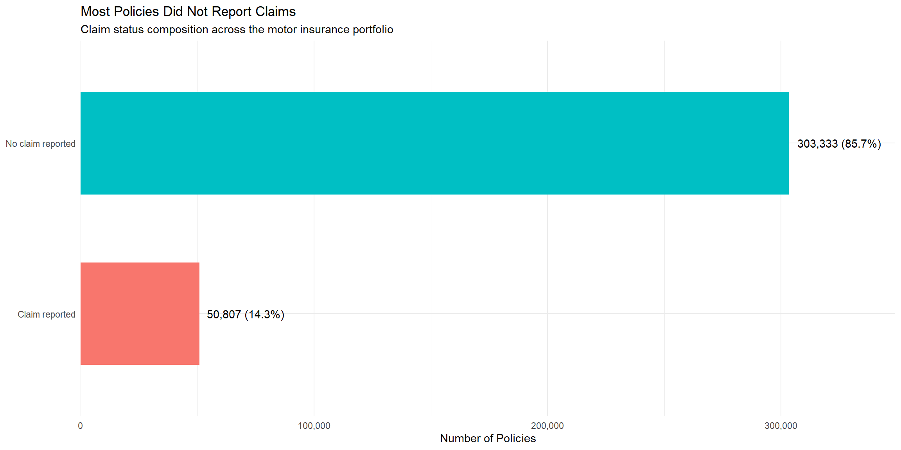
Note Observations
The portfolio primarily consists of no-claim policies, with 303,333 policies (85.7%) indicating no claims. This pattern is consistent with motor insurance portfolios where claim occurrences are typically concentrated within a relatively small subset of insured customers.
Only 50,807 policies (14.3%) filed claims, indicating that claim activity is concentrated among a minority of policyholders rather than being evenly distributed across the portfolio.
Despite representing a relatively small proportion of policies, customers who report claims can still lead to significant portfolio losses if the severity of claims is considerable. As a result, claim frequency by itself may not completely account for portfolio profitability or financial risk.
The distribution also suggests potential zero-inflation behaviour commonly observed in insurance claim datasets, where numerous policies report no claims, while a smaller portion yields positive claim results.
Future research should explore if incurred losses and loss ratios are equally concentrated among claim-reporting policyholders, as declines in profitability may stem from either frequent low-cost claims or rare high-severity claims.
4.1.2 Premium Distribution Across Policies
Histograms combined with density curves are commonly used in statistical graphics to examine distribution shape, skewness, concentration, and long-tail behaviour(Programming Interactive Data Visualisation With R – R for Visual Analytics. Logarithmic scaling was additionally applied because financial variables in insurance portfolios commonly exhibit right-skewed distributions.
The chart below examines if lower-premium policies dominate the portfolio or if there is significant variability in policy pricing.
Code
premium_data <- motor_feature |>
filter(
!is.na(total_premium),
total_premium > 0
)
premium_median <- median(
premium_data$total_premium,
na.rm = TRUE
)
premium_plot <-
ggplot(
premium_data,
aes(x = total_premium)
) +
geom_histogram(
aes(y = after_stat(density)),
bins = 40,
fill = "#c7c8cc",
colour = "#f5f5f5",
alpha = 0.9
) +
geom_density(
colour = "#34414E",
linewidth = 1
) +
geom_vline(
xintercept = premium_median,
colour = "#595DE5",
linewidth = 0.8,
linetype = "dashed"
) +
annotate(
"text",
x = premium_median * 1.08,
y = 0.12,
label = scales::comma(
round(premium_median,0)
),
colour = "#595DE5",
hjust = 0,
size = 3.8
) +
scale_x_log10(
labels = scales::comma
) +
scale_y_continuous(
expand = expansion(
mult = c(0.05,0.08)
)
) +
labs(
title = "Premium Distribution Across Policies",
subtitle = "Log scale applied because premium values are right-skewed",
x = "Premium (Log Scale)",
y = "Density"
) +
theme_minimal() +
theme(
panel.grid.major =
element_blank(),
panel.grid.minor =
element_blank(),
plot.background =
element_rect(
fill="#f5f5f5",
colour="#f5f5f5"
),
panel.background =
element_rect(
fill="#f5f5f5",
colour="#f5f5f5"
),
axis.ticks =
element_blank()
)
premium_plot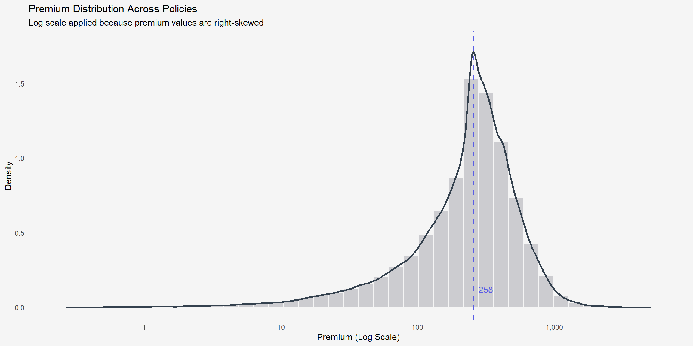
Note Observations
Premium values exhibit a positively skewed distribution, where most policies are concentrated within lower-to-moderate premium ranges while fewer policies possess substantially larger premiums.
The strong concentration around lower premium ranges suggests that the portfolio is primarily composed of standard-risk or lower-coverage policies, whereas the extended right tail indicates the presence of higher-risk or higher-value insured exposures.
The long-tail behavior indicates that premium distributions are unevenly spread among policyholders.A relatively small subset of policies may thus have an outsized impact on the premium revenue of the portfolio.
The skewed structure also suggests that average premium values alone might not sufficiently capture the overall pricing dynamics of the portfolio. As a result, visualizations that focus on the median and distribution are crucial for understanding the characteristics of insurance pricing.
4.1.3 Yearly Portfolio Performance
Temporal visualisation is important in insurance analytics because underwriting profitability and claim behaviour may vary across different policy years due to changing exposure composition, pricing strategies, claim severity trends, or market conditions. Line charts are effective for illustrating year-to-year movement and allowing temporal patterns to be compared clearly through connected visual trajectories.
This section examines yearly portfolio performance using key underwriting indicators including claim rate, loss ratio, and underpricing rate. Lower values generally indicate stronger underwriting performance and reduced profitability pressure within the motor insurance portfolio.
Code
yearly_performance <-
motor_feature |>
group_by(year) |>
summarise(
total_policies = n(),
claim_rate =
mean(
claim_status == "Claim reported",
na.rm = TRUE
),
loss_ratio =
sum(
total_incurred,
na.rm = TRUE
) /
sum(
total_premium,
na.rm = TRUE
),
underpricing_rate =
mean(
total_incurred > total_premium,
na.rm = TRUE
),
.groups = "drop"
) |>
pivot_longer(
cols = c(
claim_rate,
loss_ratio,
underpricing_rate
),
names_to = "metric",
values_to = "value"
) |>
mutate(
metric =
case_when(
metric == "claim_rate" ~ "Claim Rate",
metric == "loss_ratio" ~ "Loss Ratio",
metric == "underpricing_rate" ~ "Underpricing Rate"
)
)
yearly_performance_plot <-
ggplot(
yearly_performance,
aes(
x = factor(year),
y = value,
group = metric
)
) +
geom_line(
colour = "grey55",
linewidth = 1
) +
geom_point(
colour = "#E0218A",
size = 4
) +
geom_text(
aes(
label =
scales::percent(
value,
accuracy = 0.1
)
),
vjust = -0.9,
size = 3.5,
colour = "#E0218A"
) +
facet_wrap(
~ metric,
scales = "free_y"
) +
scale_y_continuous(
labels = scales::percent,
expand =
expansion(
mult = c(
0.08,
0.25
)
)
) +
labs(
title =
"Yearly Portfolio Performance across Key Risk Indicators",
subtitle =
"Lower claim rate, loss ratio and underpricing rate generally indicate stronger underwriting profitability and portfolio stability",
x =
"Policy Year",
y =
NULL
) +
theme_minimal() +
theme(
panel.grid.major.x =
element_blank(),
panel.grid.minor =
element_blank(),
plot.background =
element_rect(
fill = "#f5f5f5",
colour = "#f5f5f5"
),
panel.background =
element_rect(
fill = "#f5f5f5",
colour = "#f5f5f5"
),
strip.text =
element_text(
face = "bold"
),
plot.title =
element_text(
face = "bold",
size = 14
),
axis.ticks =
element_blank()
)
yearly_performance_plot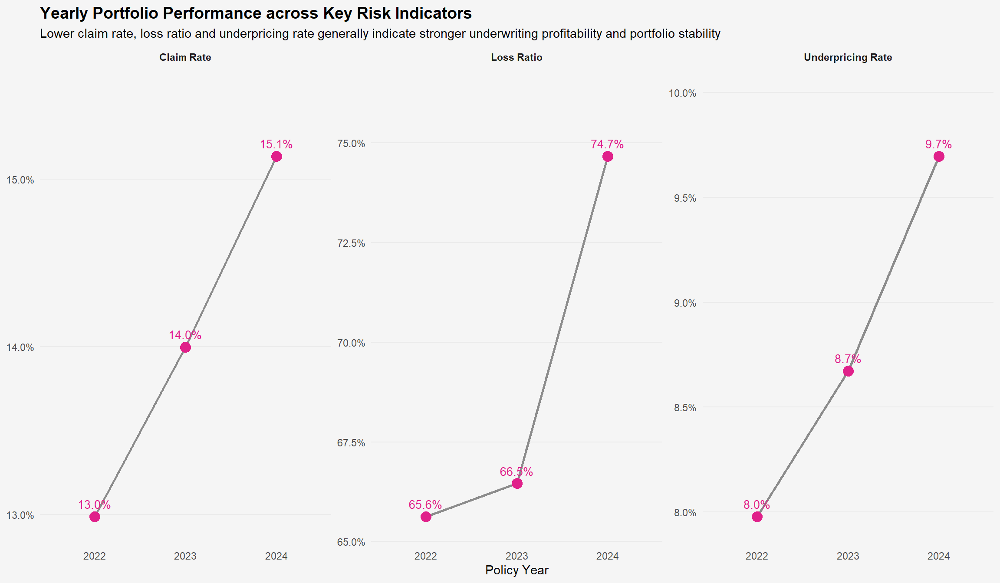
Note Observations
All three portfolio risk indicators increased steadily from 2022 to 2024, suggesting worsening underwriting performance and growing profitability pressure over time.
Loss ratio experienced the sharpest increase, rising from 65.6% in 2022 to 74.7% in 2024, indicating that claim costs consumed a larger proportion of collected premiums in 2024.
The simultaneous increase in claim rate and underpricing rate suggests that both claim frequency and pricing adequacy may have contributed to the deterioration in portfolio profitability.
4.2 Policyholder Characteristics
After portfolio outcomes are determined, the focus of the analysis turns to the characteristics of policyholders. Customer demographic characteristics are significant as they impact underwriting choices and may lead to variations in insurance risk tendencies.
The subsequent visual representations analyze the distributions of age and driving experience among insured policyholders.
4.2.1 Driver Age Profile
Boxplots along with jittered observations offer insights into both summary statistics and patterns in individual data. Jittering minimizes overplotting and exposes the concentration of observations that could potentially overlap.
The chart below examines the age distribution of insured drivers and emphasizes the occurrence of possible outlier age groups.
Code
driver_age_group_plot_data <-
motor_feature |>
mutate(
age_band = cut(
driver_age,
breaks = c(
18,
30,
40,
50,
60,
Inf
),
labels = c(
"<30",
"30–39",
"40–49",
"50–59",
"60+"
),
right = FALSE
)
) |>
count(
age_band
) |>
mutate(
pct = n / sum(n),
label = paste0(
scales::comma(n),
"\n",
scales::percent(
pct,
accuracy = 0.1
)
)
)
driver_age_plot <-
ggplot(
driver_age_group_plot_data,
aes(
x = age_band,
y = n
)
) +
geom_col(
width = 0.7,
fill = "#c7c8cc",
color = "#f5f5f5"
) +
geom_text(
aes(
label = label
),
vjust = -0.4,
size = 3.5
) +
scale_y_continuous(
labels = scales::comma,
expand = expansion(
mult = c(0, 0.15)
)
) +
labs(
title = "Driver Age Group Composition",
subtitle = "Distribution of insured policyholders across age categories",
x = "Driver Age Group",
y = "Number of Policyholders"
) +
theme_minimal() +
theme(
panel.grid.major = element_blank(),
panel.grid.minor = element_blank(),
plot.background = element_rect(
fill = "#f5f5f5",
colour = "#f5f5f5"
),
panel.background = element_rect(
fill = "#f5f5f5",
colour = "#f5f5f5"
),
axis.ticks = element_blank()
)
driver_age_plot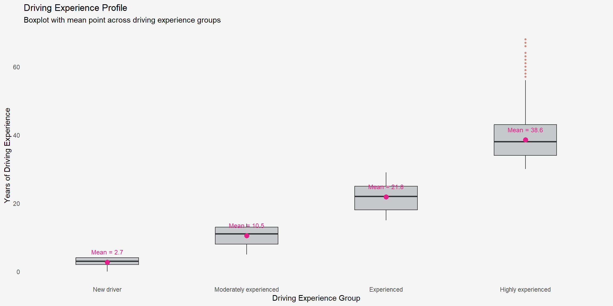
Note Observations
The largest portfolio segment consists of policyholders aged 40–49, totaling 96,959 policies (27.4%), while the 50–59 age group follows closely with 85,303 policies (24.1%). Collectively, these middle-aged groups represent over half of the insured portfolio’s exposure.
Drivers under 30 account for just 9,553 policies (2.7%) of policyholders, indicating that younger drivers comprise a relatively small portion of the insurer’s customer base despite being traditionally associated with higher accident risk in motor insurance literature.
The distribution remains relatively balanced across the 30–39, 50–59, and 60+ groups, indicates that the insurer upholds a varied age-risk portfolio instead of focusing primarily on one demographic segment.
From a risk management viewpoint, the concentration of policies among seasoned drivers may lead to enhanced portfolio stability as experienced drivers are typically linked to reduced claim frequencies and more consistent driving behavior.
However, additional investigation is necessary to assess if claim severity and portfolio profitability vary significantly among different age groups, since age by itself might not entirely clarify insurance risk exposure.
4.2.2 Driving Experience Profile
Driving experience offers extra insights beyond age alone, as drivers of the same age can have varying degrees of driving exposure. Visualizing distributions of driving experiences enables comparisons among various experience categories and aids in understanding portfolio maturity.
The chart below explores the comprehensive experience profile of policyholders within the insurance portfolio.
Code
motor_feature <-
motor_feature |>
mutate(
driving_experience_group =
factor(
driving_experience_group,
levels = c(
"New driver",
"Moderately experienced",
"Experienced",
"Highly experienced"
)
)
)
driving_exp_mean_data <-
motor_feature |>
group_by(driving_experience_group) |>
summarise(
mean_exp = mean(driving_experience, na.rm = TRUE),
.groups = "drop"
) |>
mutate(
label = round(mean_exp, 1)
)
driving_exp_plot <-
ggplot(
motor_feature,
aes(
x = driving_experience_group,
y = driving_experience
)
) +
geom_boxplot(
fill = "#c7c8cc",
outlier.colour = "#d18a7d",
outlier.shape = 16,
outlier.size = 1,
width = 0.45
) +
stat_summary(
fun = mean,
geom = "point",
colour = "#e0218a",
size = 3
) +
geom_text(
data = driving_exp_mean_data,
aes(
x = driving_experience_group,
y = mean_exp,
label = label
),
colour = "#e0218a",
size = 3.2,
position = position_nudge(x = 0.32),
hjust = 0,
vjust = 0.4
) +
coord_cartesian(clip = "off") +
labs(
title = "Driving Experience Profile",
subtitle = "Boxplot with mean point across driving experience groups",
x = "Driving Experience Group",
y = "Years of Driving Experience"
) +
theme_minimal() +
theme(
panel.grid.major = element_blank(),
panel.grid.minor = element_blank(),
plot.background = element_rect(
fill = "#f5f5f5",
colour = "#f5f5f5"
),
panel.background = element_rect(
fill = "#f5f5f5",
colour = "#f5f5f5"
),
axis.ticks = element_blank()
)
driving_exp_plot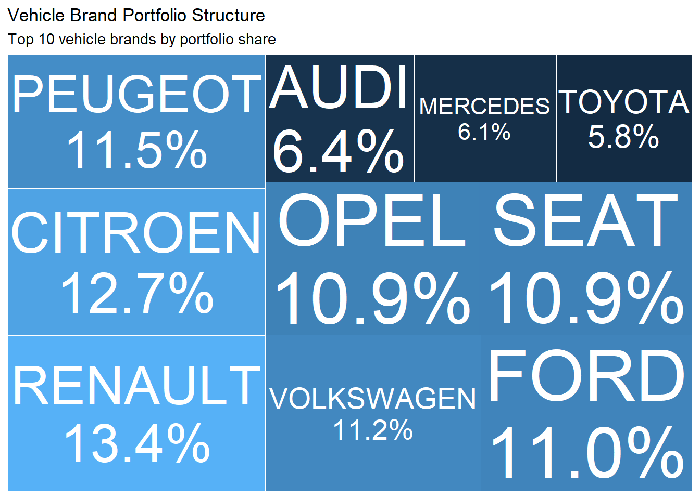
Note Observations
Drivers with extensive experience show the highest median driving tenure at approximately 38.6 years and also display the widest distribution range, indicating substantial variability within this policyholder segment.
New drivers exhibit a significantly tighter distribution centered around 2.7 years of driving experience, indicating a relatively uniform and immature driving profile.
Several high-end outliers are observed among highly experienced drivers, suggesting the presence of policyholders with exceptionally long driving histories extending beyond 60 years.
While seasoned drivers are prevalent in the higher levels of driving experience, the wider distribution suggests that mere driving experience might not consistently lead to reduced insurance risk, since behavioral and vehicle-related elements could still influence claim results. The relatively tight distribution among new drivers indicates reduced variability in exposure traits, which may favor more uniform underwriting approaches for this group.
Thus, a deeper analysis could investigate claim frequency and severity patterns among experience groups might yield greater understanding of whether longer driving tenure consistently enhances portfolio profitability and minimizes volatility.
4.3 Vehicle Portfolio Structure
Vehicle attributes were then analyzed since vehicle-related features affect pricing, underwriting choices, and claims behavior. Grasping the makeup of insured vehicles offers further context prior to examining risk factors and claims results.
The following visualisations focus on portfolio concentration and vehicle characteristics.
4.3.1 Vehicle Brand Portfolio Structure
Treemaps offer a clear visualization of categorical composition by showing category size in proportion. Bigger rectangles signify enhanced portfolio representation and assist in recognizing leading vehicle brands.
The chart below examines if insurance policies are focused on particular vehicle manufacturers.
Code
brand_data <-
motor_feature |>
count(
vehicle_brand,
sort = TRUE
) |>
slice_max(
n,
n = 10
) |>
mutate(
pct =
n/sum(n),
label =
paste0(
vehicle_brand,
"\n",
scales::percent(
pct,
accuracy=.1
)
)
)
brand_plot <-
ggplot(
brand_data,
aes(
area=n,
fill=n,
label=label
)
)+
treemapify::geom_treemap(
colour="#f5f5f5",
linewidth=.8
)+
treemapify::geom_treemap_text(
place="centre",
grow=TRUE,
reflow=TRUE,
colour="white",
min.size=6
)+
scale_fill_gradient(
low="#d9d9d9",
high="#5c5c5c"
)+
labs(
title="Vehicle Brand Portfolio Structure",
subtitle="Top 10 vehicle brands by portfolio share"
)+
theme_minimal()+
theme(
legend.position="none",
plot.background=
element_rect(
fill="#f5f5f5",
colour="#f5f5f5"
),
panel.background=
element_rect(
fill="#f5f5f5",
colour="#f5f5f5"
)
)
brand_plot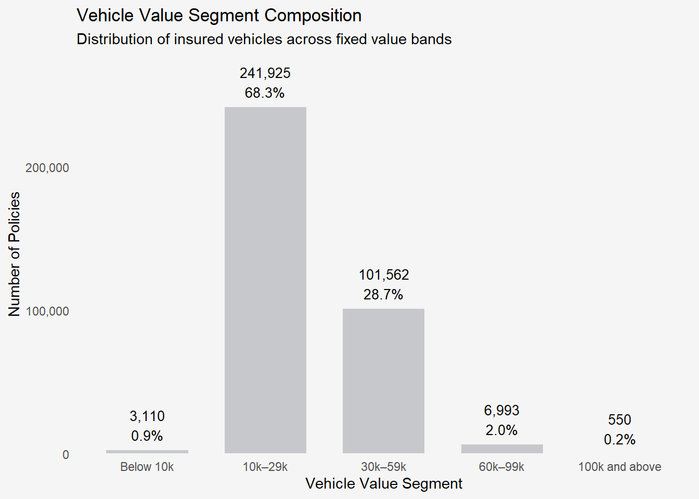
Note Observations
The portfolio shows an even distribution across major vehicle brands, with Renault (13.4%), Citroen (12.7%), Peugeot (11.5%), Volkswagen (11.2%), and Ford (11.0%) collectively accounting for a substantial proportion of insured vehicles.
No single manufacturer significantly dominates the portfolio composition, indicating that the insurer’s exposure is reasonably diversified across multiple automotive segments rather than concentrated within a specific brand category. This balanced distribution may reduce vulnerability to manufacturer-specific claim shocks, repair inflation, or model-related defect risks that could disproportionately affect portfolio profitability and claim severity behaviour.
Nevertheless, the differing market shares across manufacturers suggest that subsequent analysis should investigate whether claim frequency, claim severity, or profitability behaviour varies across vehicle brands.
4.3.2 Vehicle Value Segments and Claim Severity Behaviour
Vehicle values are commonly associated with repair costs and claim severity in motor insurance portfolios. This section examines if the behavior of claim severity varies among different vehicle value categories. Raincloud plots combine density distributions, boxplots, and raw observations within a single visual. Compared to traditional boxplots, they better reveal clustering behaviour, variability, skewness, and potential tail-risk patterns in the data.((9 Visualising Distribution – R for Visual Analytics) A logarithmic transformation was also applied because of the significant right-skewness often seen in insurance claim amounts.
Code
library(ggdist)
vehicle_value_claim <-
motor_feature |>
mutate(
vehicle_value_segment =
case_when(
vehicle_value < 10000 ~ "Below 10k",
vehicle_value < 30000 ~ "10k–29k",
vehicle_value < 60000 ~ "30k–59k",
vehicle_value < 100000 ~ "60k–99k",
TRUE ~ "100k and above"
),
vehicle_value_segment =
factor(
vehicle_value_segment,
levels = c(
"Below 10k",
"10k–29k",
"30k–59k",
"60k–99k",
"100k and above"
)
),
log_incurred =
log1p(total_incurred)
) |>
filter(
total_incurred > 0,
!is.na(vehicle_value_segment)
)
portfolio_median <-
median(
vehicle_value_claim$log_incurred,
na.rm = TRUE
)
ggplot(
vehicle_value_claim,
aes(
x = log_incurred,
y = vehicle_value_segment
)
) +
ggdist::stat_halfeye(
aes(
fill = vehicle_value_segment
),
adjust = 0.65,
width = 0.55,
justification = -0.25,
alpha = 0.65,
point_colour = NA
) +
geom_boxplot(
width = 0.14,
outlier.shape = NA,
colour = "black",
fill = "white"
) +
geom_jitter(
height = 0.08,
alpha = 0.04,
size = 0.45,
colour = "grey45"
) +
stat_summary(
fun = median,
geom = "point",
shape = 23,
size = 3.3,
fill = "white",
colour = "black"
) +
geom_vline(
xintercept = portfolio_median,
linetype = "dashed",
colour = "#595DE5",
linewidth = 0.8
) +
annotate(
"text",
x = portfolio_median + 0.15,
y = 1.15,
label = "Portfolio Median",
colour = "#595DE5",
size = 3.2,
hjust = 0
) +
scale_fill_manual(
values = rep(
"#9E9E9E",
5
)
) +
labs(
title =
"Vehicle Value Segments Reveal Different Claim Severity Behaviour",
subtitle =
"Raincloud plot compares distribution, median and tail-risk patterns across vehicle value bands",
x =
"Log(1 + Total Incurred Cost)",
y =
"Vehicle Value Segment"
) +
theme_minimal() +
theme(
legend.position = "none",
panel.grid.major.y = element_blank(),
panel.grid.minor = element_blank(),
plot.title = element_text(
face = "bold",
size = 15
)
)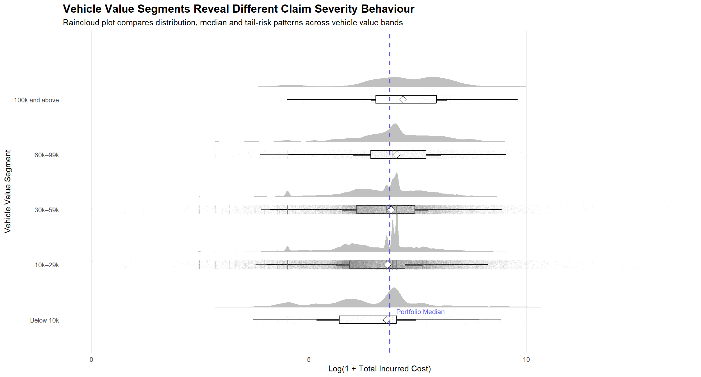
Note Observations
Claim severity distributions vary significantly among vehicle value segments, with more valuable vehicles typically showing a wider spread and increased tail-risk patterns.
The vehicle segment of 100k and above shows a broader upper-tail distribution, signifying more extreme incurred claim costs and increased claim volatility when compared to lower vehicle value segments. In comparison, the Below 10k segment shows a tighter and more focused distribution, indicating a relatively more stable and consistent pattern of claim severity behavior.
The 10k–29k and 30k–59k segments display the greatest cluster of observations near the portfolio median, suggesting that these groups significantly impact the total portfolio claim activity. Although most claim severities remain clustered around moderate levels, the longer right-tail patterns observed among higher-value vehicles suggest that a smaller subset of premium vehicles may contribute disproportionately to severe loss events.
The varying spread and tail behaviour among vehicle value categories suggest that vehicle value could affect both average claim severity and the volatility and unpredictability of incurred losses.
Hence, Higher premiums do not guarantee improved profitability, highlighting the necessity to evaluate both premium and claims patterns together.
4.4 Insurance Risk and Profitability across Policy Types
Following the assessment of policyholder and vehicle traits, the focus of the analysis now transitions to claims results and risk behaviors at the product level. Insurance products vary in their coverage frameworks and pricing methods, which can affect claim trends and the performance of the portfolio.
Instead of only examining the distribution of claim cost, this section evaluates policy types through four essential insurance risk metrics:
Code
risk_summary <-
motor_feature |>
mutate(
claim_flag = if_else(
total_claims > 0,
"Has Claim",
"No Claim"
)
) |>
group_by(policy_type) |>
summarise(
total_policies = n(),
claim_rate = mean(claim_flag == "Has Claim", na.rm = TRUE),
avg_claim_cost = mean(total_incurred, na.rm = TRUE),
avg_premium = mean(total_premium, na.rm = TRUE),
loss_ratio = sum(total_incurred, na.rm = TRUE) /
sum(total_premium, na.rm = TRUE),
.groups = "drop"
) |>
arrange(desc(loss_ratio))
knitr::kable(
risk_summary |>
mutate(
claim_rate = scales::percent(claim_rate, accuracy = 0.1),
loss_ratio = scales::percent(loss_ratio, accuracy = 0.1),
avg_claim_cost = round(avg_claim_cost, 0),
avg_premium = round(avg_premium, 0)
) |>
rename(
`Policy Type` = policy_type,
`Total Policies` = total_policies,
`Claim Rate` = claim_rate,
`Average Claim Cost` = avg_claim_cost,
`Average Premium` = avg_premium,
`Loss Ratio` = loss_ratio
),
caption = "Portfolio Risk and Profitability Summary across Policy Types"
)| Policy Type | Total Policies | Claim Rate | Average Claim Cost | Average Premium | Loss Ratio |
|---|---|---|---|---|---|
| Comprehensive without Excess | 16181 | 31.3% | 600 | 639 | 93.9% |
| Comprehensive with Excess | 91199 | 18.5% | 289 | 392 | 73.8% |
| Third-party + Glass | 36367 | 10.9% | 156 | 226 | 69.2% |
| Combined Coverage | 204636 | 12.0% | 154 | 243 | 63.4% |
| Third-party | 5757 | 6.9% | 96 | 177 | 54.3% |
Code
loss_ratio_plot <-
ggplot(
risk_summary,
aes(
x = reorder(policy_type, loss_ratio),
y = loss_ratio
)
) +
geom_col(
fill = "#c7c8cc",
width = 0.6
) +
geom_hline(
yintercept = 1,
linetype = "dashed",
colour = "#E0218A",
linewidth = 0.8
) +
geom_text(
aes(
label = scales::percent(
loss_ratio,
accuracy = 0.1
)
),
hjust = -0.1,
colour = "#E0218A",
size = 3.5
) +
annotate(
"text",
x = 1,
y = 1.02,
label = "100% break-even threshold",
colour = "#E0218A",
hjust = 0,
size = 3.2
) +
coord_flip() +
scale_y_continuous(
labels = scales::percent,
expand = expansion(mult = c(0, 0.2))
) +
labs(
title = "Loss Ratio across Policy Types",
subtitle = "Policies approaching 100% indicate greater profitability pressure",
x = "Policy Type",
y = "Loss Ratio"
) +
theme_minimal() +
theme(
panel.grid.major = element_blank(),
panel.grid.minor = element_blank(),
plot.background = element_rect(fill = "#f5f5f5", colour = "#f5f5f5"),
panel.background = element_rect(fill = "#f5f5f5", colour = "#f5f5f5"),
axis.ticks = element_blank()
)
loss_ratio_plot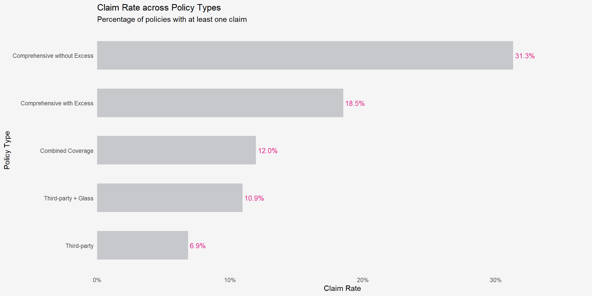
Code
portfolio_claim_rate <-
sum(risk_summary$claim_rate * risk_summary$total_policies) /
sum(risk_summary$total_policies)
claim_rate_plot <-
ggplot(
risk_summary,
aes(
x = reorder(policy_type, claim_rate),
y = claim_rate
)
) +
geom_col(
fill = "#c7c8cc",
width = 0.6
) +
geom_hline(
yintercept = portfolio_claim_rate,
linetype = "dashed",
colour = "#595DE5",
linewidth = 0.8
) +
geom_text(
aes(
label = scales::percent(
claim_rate,
accuracy = 0.1
)
),
hjust = -0.1,
colour = "#E0218A",
size = 3.5
) +
annotate(
"text",
x = 1,
y = portfolio_claim_rate + 0.015,
label = "Portfolio average",
colour = "#595DE5",
hjust = 0,
size = 3.2
) +
coord_flip() +
scale_y_continuous(
labels = scales::percent,
expand = expansion(mult = c(0, 0.18))
) +
labs(
title = "Claim Rate across Policy Types",
subtitle = "Reference line highlights products above the portfolio average claim rate",
x = "Policy Type",
y = "Claim Rate"
) +
theme_minimal() +
theme(
panel.grid.major = element_blank(),
panel.grid.minor = element_blank(),
plot.background = element_rect(fill = "#f5f5f5", colour = "#f5f5f5"),
panel.background = element_rect(fill = "#f5f5f5", colour = "#f5f5f5"),
axis.ticks = element_blank()
)
claim_rate_plot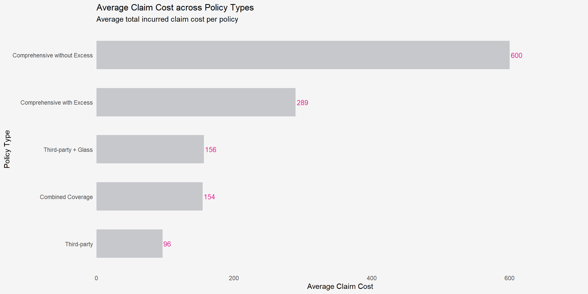
Code
avg_claim_mean <-
mean(
risk_summary$avg_claim_cost,
na.rm = TRUE
)
avg_claim_plot <-
ggplot(
risk_summary,
aes(
x = avg_claim_cost,
y = reorder(policy_type, avg_claim_cost)
)
) +
geom_segment(
aes(
x = 0,
xend = avg_claim_cost,
y = policy_type,
yend = policy_type
),
colour = "grey78",
linewidth = 2
) +
geom_vline(
xintercept = avg_claim_mean,
linetype = "dashed",
colour = "#595DE5",
linewidth = 0.8
) +
geom_point(
colour = "#E0218A",
size = 4
) +
geom_text(
aes(
label = scales::comma(
round(avg_claim_cost, 0)
)
),
nudge_x = 20,
colour = "#E0218A",
size = 3.5
) +
annotate(
"text",
x = avg_claim_mean + 20,
y = 1,
label = "Portfolio average",
colour = "#595DE5",
hjust = 0,
size = 3.2
) +
scale_x_continuous(
labels = scales::comma,
expand = expansion(mult = c(0, 0.18))
) +
labs(
title = "Average Claim Cost across Policy Types",
subtitle = "Reference line highlights products above the portfolio average claim cost",
x = "Average Claim Cost",
y = "Policy Type"
) +
theme_minimal() +
theme(
panel.grid.major.y = element_blank(),
panel.grid.minor = element_blank(),
plot.background = element_rect(fill = "#f5f5f5", colour = "#f5f5f5"),
panel.background = element_rect(fill = "#f5f5f5", colour = "#f5f5f5"),
axis.ticks = element_blank()
)
avg_claim_plot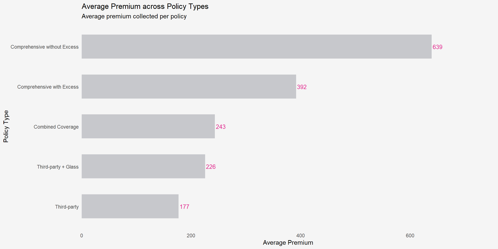
Code
library(ggrepel)
premium_adequacy_plot <-
ggplot(
risk_summary,
aes(
x = avg_premium,
y = avg_claim_cost
)
) +
# Pricing adequacy reference line
geom_segment(
aes(
x = 150,
y = 150,
xend = 700,
yend = 700
),
linetype = "dashed",
colour = "#E0218A",
linewidth = 0.8,
inherit.aes = FALSE
) +
# Bubble plot
geom_point(
aes(
size = claim_rate,
colour = loss_ratio
),
alpha = 0.9
) +
# Policy labels
ggrepel::geom_text_repel(
aes(
label = policy_type
),
size = 3.5,
colour = "grey20",
box.padding = 0.5,
point.padding = 0.3,
segment.color = "grey70",
show.legend = FALSE
) +
# Bubble size scale
scale_size_continuous(
labels = scales::percent,
range = c(5, 14)
) +
# Loss ratio colour scale
scale_colour_gradient(
low = "#8FD3C7",
high = "#E0218A",
labels = scales::percent
) +
# Underpricing annotation
annotate(
"text",
x = 470,
y = 720,
label = "Underpricing Risk Zone",
colour = "#E0218A",
size = 3.7,
fontface = "bold"
) +
# Axis formatting
scale_x_continuous(
labels = scales::comma,
expand = expansion(mult = c(0.05, 0.1))
) +
scale_y_continuous(
labels = scales::comma,
expand = expansion(mult = c(0.05, 0.1))
) +
# Labels
labs(
title =
"Premium Adequacy versus Claim Severity across Policy Products",
subtitle =
"Bubble size represents claim frequency while colour intensity reflects profitability pressure",
x =
"Average Premium",
y =
"Average Claim Cost",
size =
"Claim Rate",
colour =
"Loss Ratio"
) +
# Theme
theme_minimal() +
theme(
panel.grid.minor =
element_blank(),
plot.background =
element_rect(
fill = "#f5f5f5",
colour = "#f5f5f5"
),
panel.background =
element_rect(
fill = "#f5f5f5",
colour = "#f5f5f5"
),
axis.ticks =
element_blank(),
legend.position = "right",
plot.title =
element_text(
face = "bold",
size = 14
),
plot.subtitle =
element_text(
size = 10
)
)
premium_adequacy_plot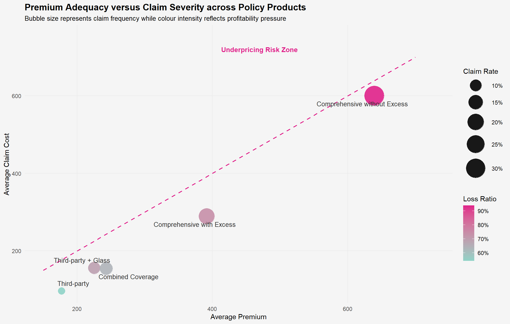
Note Observations
Comprehensive without Excess consistently shows the highest portfolio risk, noting the top claim frequency (31.3%), average claim cost (600), and loss ratio (93.9%), reflecting significant profitability strain in this policy category.
The loss ratio chart shows that Comprehensive without Excess policies are approaching the underwriting break-even threshold,implying that premium revenues are almost entirely balanced by claims incurred.
The charts depicting claim frequency and average claim cost indicate that the decline in profitability results from both high claim occurrence rates and increased claim severity, emphasizing the need to examine both factors together.
The profitability risk quadrant bubble chart supports these conclusions by placing Comprehensive without Excess in the portfolio’s highest-risk area, where claim activity and profitability pressure are significantly increased. In comparison, Third-party policies show relatively reduced claim frequency, claim severity, and loss ratio, indicating a more consistent underwriting performance and diminished portfolio volatility.
Comparing the two comprehensive products also suggests that policy excess may help moderate claim behaviour, as Comprehensive with Excess policies exhibit noticeably lower claim frequency and severity relative to Comprehensive without Excess policies.
5 Exploratory Data Analysis
Exploratory data analysis is carried out to investigate connections among policyholder traits, vehicle features, policy categories, and claim results. In contrast to the earlier univariate section, this part emphasizes the relationships among variables to reveal concealed risk patterns within the motor insurance portfolio.
5.1 Do Certain Policy Products Exhibit Higher Claim Exposure?
This part explores the variations in claim occurrences among different policy types. As the type of policy reflects the structure of the insurance product, variations in claim behavior may indicate if specific product designs entail a greater risk exposure.
Code
policy_claim_mix <-
motor_feature |>
count(
policy_type,
claim_status
) |>
group_by(policy_type) |>
mutate(
pct = n / sum(n),
label = scales::percent(
pct,
accuracy = 0.1
)
) |>
ungroup()
policy_claim_order <-
policy_claim_mix |>
filter(
claim_status == "Claim reported"
) |>
arrange(
pct
) |>
pull(
policy_type
)
policy_claim_mix <-
policy_claim_mix |>
mutate(
policy_type = factor(
policy_type,
levels = policy_claim_order
)
)
policy_claim_mix_plot <-
ggplot(
policy_claim_mix,
aes(
x = policy_type,
y = pct,
fill = claim_status
)
) +
geom_col(
width = 0.6,
colour = "white",
linewidth = 0.3
) +
geom_text(
aes(label = label),
position = position_stack(vjust = 0.5),
size = 3.6,
fontface = "bold",
colour = "black"
) +
scale_colour_manual(
values = c(
"No claim reported" = "black",
"Claim reported" = "white"
)
) +
coord_flip() +
scale_y_continuous(
labels = scales::percent,
expand = expansion(mult = c(0, 0.02))
) +
scale_fill_manual(
values = c(
"No claim reported" = "#E2E2E2",
"Claim reported" = "#E0218A"
),
breaks = c(
"Claim reported",
"No claim reported"
)
) +
labs(
title = "Claim Status Composition by Policy Type",
subtitle = "Comprehensive policies exhibit substantially higher claim occurrence rates",
x = NULL,
y = "Policy Share",
fill = "Claim Status"
) +
theme_minimal() +
theme(
panel.grid.major.y = element_blank(),
panel.grid.minor = element_blank(),
panel.grid.major.x = element_line(
colour = "#e8e8e8"
),
plot.background = element_rect(
fill = "#f5f5f5",
colour = "#f5f5f5"
),
panel.background = element_rect(
fill = "#f5f5f5",
colour = "#f5f5f5"
),
legend.position = "bottom",
plot.title = element_text(
face = "bold",
size = 14
),
axis.text.y = element_text(
face = "bold"
),
axis.ticks = element_blank()
)
policy_claim_mix_plot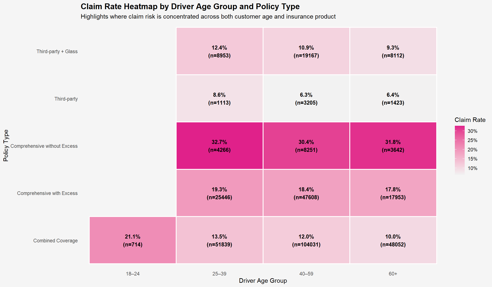
Note Insights
Claim occurrence varies significantly among different policy types, suggesting that insurance products are linked to unique risk profiles instead of demonstrating consistent claim behavior..
Comprehensive without Excess captures the largest share of claim-reported policies (31.3%), significantly surpassing all other policy types. This indicates that policyholders with more comprehensive coverage plans might be more inclined to submit claims.
Third-party policies show the least claim ratio (6.9%), reflecting a relatively lower frequency of claims, even though they offer a more straightforward and cost-effective coverage choice.
The difference between Comprehensive without Excess and Third-party policies implies that more extensive insurance coverage might lead to higher claim utilization or attract policyholders with different risk characteristics.
The substantial gap in claim occurrence between comprehensive and third-party products may also indicate adverse selection behaviour, where higher-risk policyholders preferentially select broader insurance coverage.
Overall, the findings suggest that policy structure and coverage design may materially influence portfolio risk exposure and should therefore be carefully considered during underwriting and pricing evaluation.
5.2 Does Driver Age Influence Claim Risk Differently Across Policy Types?
The driver age is a significant underwriting factor as claims behavior can differ among various age groups. This analysis examines claim rates among different age segments to determine if specific age groups are more linked to claim occurrences.
Code
age_policy_claim <-
motor_feature |>
group_by(
driver_age_group,
policy_type
) |>
summarise(
total_policies = n(),
claim_rate = mean(
claim_status == "Claim reported",
na.rm = TRUE
),
.groups = "drop"
) |>
filter(
total_policies >= 300
) |>
mutate(
claim_label =
paste0(
scales::percent(
claim_rate,
accuracy = .1
),
"\n(n=",
total_policies,
")"
)
)
age_policy_claim_plot <-
ggplot(
age_policy_claim,
aes(
x = driver_age_group,
y = policy_type,
fill = claim_rate
)
) +
geom_tile(
colour = "white",
linewidth = 0.8
) +
geom_text(
aes(label = claim_label),
colour = "black",
size = 3.4,
fontface = "bold"
) +
scale_fill_gradient(
low = "#f2f2f2",
high = "#e0218a",
labels = scales::percent
) +
labs(
title = "Claim Rate Heatmap by Driver Age Group and Policy Type",
subtitle = "Highlights where claim risk is concentrated across both customer age and insurance product",
x = "Driver Age Group",
y = "Policy Type",
fill = "Claim Rate"
) +
theme_minimal() +
theme(
panel.grid = element_blank(),
plot.background = element_rect(
fill = "#f5f5f5",
colour = "#f5f5f5"
),
panel.background = element_rect(
fill = "#f5f5f5",
colour = "#f5f5f5"
),
axis.ticks = element_blank(),
plot.title = element_text(
face = "bold",
size = 14
),
legend.position = "right"
)
age_policy_claim_plot
Note Insights
The risk of claims is affected by both the age of the driver and the structure of the policy, not by age by itself.
Comprehensive without Excess consistently reports claim rates exceeding 30%, indicating that more extensive coverage options appeal to higher-risk policyholders regardless of their age group.
Drivers in the 18–24 age group show higher claim rates across various policy products, highlighting the significance of age as a factor in underwriting.
Products from third parties exhibit comparatively lower claim rates across all age categories, suggesting a more consistent risk exposure.
Hence, the relationship between demographic traits and insurance offerings indicates that pricing strategies must consider both customer profiles and policy structures together.
5.3 How Does Claim Severity Distribution Differ Across Vehicle Value Segments?
Vehicle value is an important underwriting consideration because higher-value vehicles may involve greater repair complexity, replacement costs, and claim severity exposure. However, claim severity behaviour may not increase uniformly across vehicle segments due to differences in vehicle usage patterns, repair practices, and policyholder risk profiles.
This section examines whether claim severity distributions differ across vehicle value segments among policies with reported incurred claims.
A raincloud plot is used to simultaneously visualise distribution density, boxplot summaries, and individual claim observations. Compared to conventional boxplots, raincloud plots better reveal distribution concentration, spread variability, skewness, and extreme tail-risk behaviour that may not be immediately observable from summary statistics alone.
Code
severity_vehicle <-
motor_feature |>
mutate(
vehicle_value_segment =
case_when(
vehicle_value < 10000 ~ "Below 10k",
vehicle_value < 30000 ~ "10k–29k",
vehicle_value < 60000 ~ "30k–59k",
vehicle_value < 100000 ~ "60k–99k",
TRUE ~ "100k and above"
),
vehicle_value_segment =
factor(
vehicle_value_segment,
levels = c(
"Below 10k",
"10k–29k",
"30k–59k",
"60k–99k",
"100k and above"
)
),
log_incurred =
log1p(total_incurred)
) |>
filter(
total_incurred > 0,
!is.na(vehicle_value_segment)
)
portfolio_median <-
median(
severity_vehicle$log_incurred,
na.rm = TRUE
)
severity_vehicle_plot <-
ggplot(
severity_vehicle,
aes(
x = log_incurred,
y = vehicle_value_segment
)
) +
ggdist::stat_halfeye(
fill = "#BDBDBD",
adjust = 0.65,
width = 0.55,
justification = -0.25,
point_colour = NA,
alpha = 0.75
) +
geom_boxplot(
width = 0.14,
outlier.shape = NA,
colour = "black",
fill = "white"
) +
geom_jitter(
height = 0.08,
alpha = 0.04,
size = 0.45,
colour = "grey45"
) +
stat_summary(
fun = median,
geom = "point",
shape = 23,
size = 3.3,
fill = "white",
colour = "black"
) +
geom_vline(
xintercept = portfolio_median,
linetype = "dashed",
colour = "#595DE5",
linewidth = 0.8
) +
annotate(
"text",
x = portfolio_median + 0.15,
y = 1.15,
label = "Portfolio Median",
colour = "#595DE5",
size = 3.2,
hjust = 0
) +
labs(
title =
"Vehicle Value Segments Reveal Different Claim Severity Behaviour",
subtitle =
"Raincloud plot compares distribution, median and tail-risk patterns across vehicle value bands",
x =
"Log(1 + Total Incurred Cost)",
y =
"Vehicle Value Segment"
) +
theme_minimal() +
theme(
legend.position = "none",
panel.grid.major.y =
element_blank(),
panel.grid.minor =
element_blank(),
plot.title =
element_text(
face = "bold",
size = 15
)
)
severity_vehicle_plot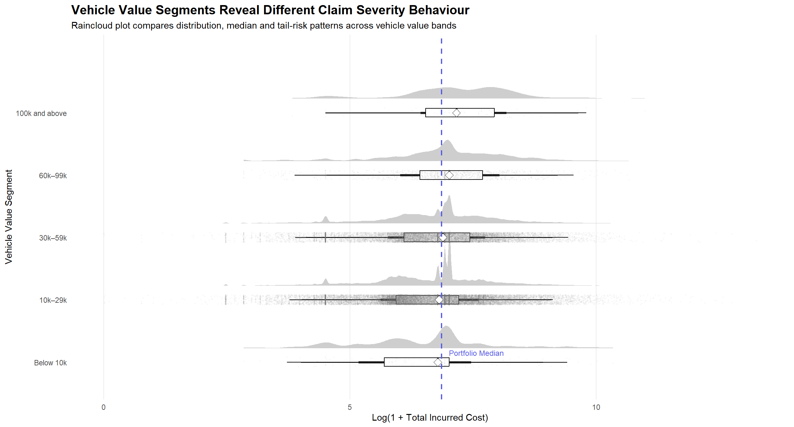
Note Insights
Higher-value vehicles exhibit relatively higher claim concentration. Policies within the 100k and above category display a slightly higher median claim severity compared with lower vehicle value groups. The central distribution appears shifted upward, suggesting owners of high-value vehicles may incur more expensive repair or replacement costs.
Mid-range vehicle categories (10k–59k) exhibit greater claim fluctuations. Although median claim severities remain relatively comparable, the raincloud distributions illustrate wider spreads and more concentrated upper-tail patterns. This implies that policyholders in these categories might display more varied claim behavior. Extreme claim observations are present across several value segments. Large incurred amounts extend far beyond the central distributions, indicating that rare but costly claims are not isolated to expensive vehicles alone. Average values alone could hide this pattern.
Furthermore, lower vehicle value does not necessarily imply lower risk. Vehicles in lower value categories still demonstrate notable variability and occasional severe claims. This suggests vehicle value alone may not fully explain insurance outcomes.
A more thorough examination could explore if these extreme assertions are linked to particular policy types, automobile brands, or driver characteristics. This could assist in recognizing concealed high-risk customer groups.This insight is important as raincloud plots expose distribution behaviors and extreme claim trends that conventional summary statistics might overlook.
5.4 Are Certain Policy Products More Vulnerable to Underpricing?
This section examines if various insurance products display differing degrees of underpricing risk and how they may affect portfolio profitability. Underpricing arises when the costs of claims surpass the premiums collected, which can lead to financial losses. This analysis seeks to pinpoint policy products that may significantly affect portfolio performance and necessitate increased underwriting focus by examining underpricing rates in relation to portfolio exposure.
Code
#| fig-width: 12
#| fig-height: 6.5
profitability <-
motor_feature |>
group_by(policy_type) |>
summarise(
underpriced =
mean(
total_incurred > total_premium,
na.rm = TRUE
),
policies = n(),
.groups = "drop"
) |>
arrange(underpriced)
ggplot(
profitability,
aes(
x = underpriced,
y = reorder(policy_type, underpriced),
size = policies
)
) +
geom_segment(
aes(
x = 0,
xend = underpriced,
y = policy_type,
yend = policy_type
),
colour = "grey78",
linewidth = 2.2
) +
geom_point(
fill = "#E74C3C",
colour = "white",
shape = 21,
alpha = 0.9
) +
geom_label(
aes(
label =
scales::percent(
underpriced,
accuracy = 0.01
)
),
nudge_x = 0.012,
fill = "white",
label.size = 0.15,
size = 3.2
) +
annotate(
"text",
x = 0.205,
y = "Comprehensive without Excess",
label = "Highest underpricing risk",
colour = "#E74C3C",
fontface = "bold",
size = 3.4,
hjust = 1.05,
vjust = -1.4
) +
annotate(
"curve",
x = 0.18,
y = "Comprehensive without Excess",
xend = 0.205,
yend = "Comprehensive without Excess",
curvature = -0.25,
arrow = arrow(
length = unit(0.2, "cm")
),
colour = "#E74C3C",
linewidth = 0.6
) +
annotate(
"text",
x = 0.105,
y = "Combined Coverage",
label = "Large exposure means\nmoderate risk can still\ncreate portfolio impact",
colour = "grey30",
size = 3.1,
hjust = 0
) +
scale_x_continuous(
labels = scales::percent,
expand = expansion(mult = c(0, 0.18))
) +
scale_size_area(
max_size = 16,
labels = scales::comma
) +
labs(
title =
"Certain Policy Types Display Greater Underpricing Risk",
subtitle =
"Annotations highlight products with high underpricing risk and large portfolio exposure",
x =
"Underpricing Rate",
y = NULL,
size =
"Number of Policies"
) +
theme_minimal() +
theme(
legend.position = "right",
plot.title =
element_text(
face = "bold",
size = 15
),
panel.grid.major.y =
element_blank(),
panel.grid.minor =
element_blank()
)
Note Insights
The risk of underpricing differs significantly among policy products, indicating that profitability is not uniformly spread throughout the motor insurance portfolio.
Comprehensive without Excess shows the greatest underpricing rate (20.8%), suggesting that nearly one in five policies results in incurred claim costs that surpass collected premiums. In comparison to Third-party policies (4.66%), this indicates a risk of underpricing almost four times higher.
While Combined Coverage shows a fairly moderate underpricing rate (7.43%), the significantly larger bubble size indicates substantial portfolio risk. As a result, even a modest risk to profitability can lead to a significant overall financial effect because of the volume of policies released.
The relationship between underpricing risk and portfolio exposure highlights that products contributing most to financial risk are not necessarily those with the highest claim imbalance, but rather those combining elevated risk with substantial portfolio presence.
These findings indicate that the structure of policies might affect the adequacy of underwriting and the results in profitability. Products showing high underpricing rates alongside significant exposure may require a more thorough pricing assessment, targeted segmentation approaches, or stricter underwriting regulations.
5.5 Which Policy Products Exhibit Greater Tail-Risk Exposure?
This section explores if various policy types show unique patterns in claim severity and volatility. Employing ridgeline visualization, the examination contrasts the intensity, distribution, and tail characteristics of claims to discern variations in risk profiles that could impact portfolio profitability and underwriting decisions.
Code
vehicle_claim <-
motor_feature |>
filter(
total_incurred > 0
)
ggplot(
vehicle_claim,
aes(
x =
log1p(total_incurred),
y =
reorder(
policy_type,
total_incurred,
FUN = median
),
fill = after_stat(x)
)
) +
ggridges::geom_density_ridges_gradient(
scale = 2,
rel_min_height = .01,
quantile_lines = TRUE,
quantiles = 2,
alpha = .85
) +
stat_summary(
aes(
group = policy_type
),
fun = median,
geom = "point",
shape = 23,
size = 3.5,
fill = "white"
) +
scale_fill_viridis_c(
option = "C"
) +
labs(
title = "Policy Types Exhibit Distinct Claim Severity and Tail-Risk Profiles",
subtitle = "Ridgelines with median markers reveal claim concentration, volatility and extreme loss behaviour",
x = "Log(1 + Total Incurred Cost)",
y = NULL
) +
theme_ridges() +
theme(
legend.position = "none",
plot.title =
element_text(
face = "bold",
size = 15
)
)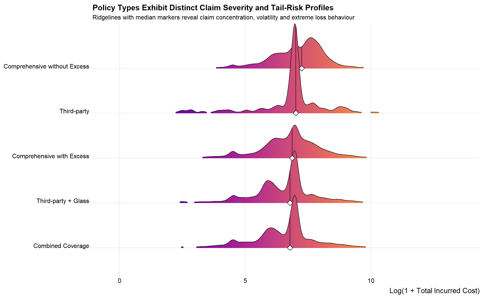
Note Insights
The ridgeline distributions indicate significant variations in claim severity concentration and volatility trends among different policy types, implying that policy design could affect portfolio risk traits. Third-party policies show a distinct and narrow central peak, suggesting that claim severities are focused within a limited range of values. The distribution features a longer left tail and irregular isolated density patterns, indicating heterogeneous claim behavior and occasional unusual cases.
Comprehensive policies (both with and without deductibles) exhibit wider distributions and increased density spread, suggesting more claim variability and heightened uncertainty in anticipated loss results. Broader distributions imply greater variability and indicate that the severity of claims is less foreseeable for these products.
The median markers (white diamonds) show that central claim patterns stay quite consistent among different policy types. However, the shape and spread of the distributions differ considerably, implying that volatility is driven more strongly by tail behaviour and dispersion rather than shifts in average claim values.
The Third-party + Glass and Combined Coverage categories show moderate concentration with a slight right-tail extension, indicating that while claims typically group within a tighter range, a portion of policyholders still produces comparably high-cost claims.
From a portfolio viewpoint, the results indicate that the type of policy serves as a significant segmentation element affecting risk volatility instead of just average claim severity. Policies that have broader distributions and more pronounced tails might require more thorough underwriting assessment, varied pricing models, or enhanced risk management measures to reduce susceptibility to significant losses.
5.6 Which Portfolio Variables Are Most Strongly Associated with Profitability and Claim Behaviour?
This section examines the relationships among key portfolio risk indicators including pricing, claim severity, vehicle characteristics, and policyholder attributes. Understanding how these variables interact could reveal concealed underwriting trends and profit catalysts within the motor insurance portfolio.
A correlogram is used since it offers an effective visual summary of pairwise connections in extensive correlation matrices. Rather than depending only on numerical correlation tables, the use of colour intensity and geometric clustering enables a more intuitive identification of stronger positive and negative associations.
Spearman correlation was utilized since financial variables related to insurance often show skewed distributions and non-linear associations.
Code
library(ggcorrplot)
corr_data <-
motor_feature |>
filter(
total_incurred > 0
) |>
mutate(
log_premium = log1p(total_premium),
log_incurred = log1p(total_incurred),
log_vehicle_value = log1p(vehicle_value),
log_power_weight = log1p(power_to_weight_ratio)
) |>
select(
log_premium,
log_incurred,
log_vehicle_value,
driver_age,
driving_experience,
vehicle_age,
total_exposure,
log_power_weight
) |>
filter(
if_all(
everything(),
~ !is.na(.x) & is.finite(.x)
)
)
corr_matrix <-
cor(
corr_data,
method = "spearman"
)
ggcorrplot(
corr_matrix,
type = "lower",
lab = TRUE,
hc.order = TRUE,
outline.color = "white",
colors = c(
"#E46C6C",
"#F5F5F5",
"#4F81BD"
)
) +
labs(
title = "Correlogram of Key Insurance Risk Indicators",
subtitle = "Claimant policies only: Spearman correlation across pricing, severity, vehicle and exposure variables"
) +
theme_minimal()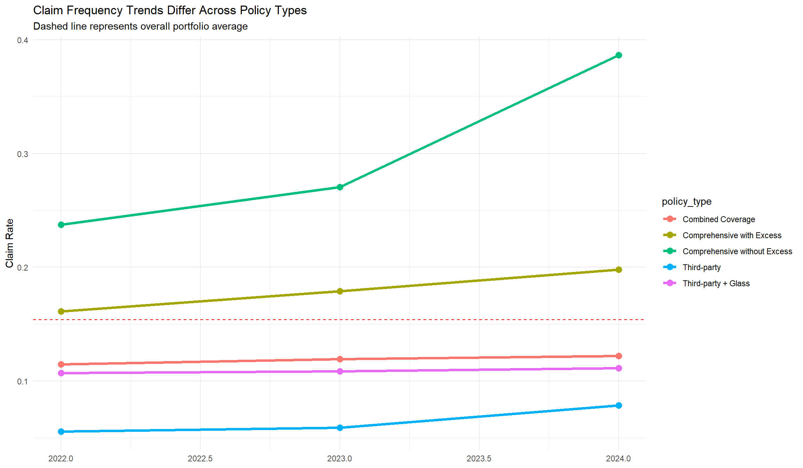
Note Insights
Driver Age and Driving Experience exhibit a very strong positive correlation (ρ = 0.86), indicating that older policyholders generally possess substantially longer driving histories and may share similar underwriting traits.
Premium amount exhibits a moderate positive correlation with Exposure (ρ = 0.49), indicating that policies with extended insured exposure periods generally gather greater premium totals as time progresses.
Vehicle Value demonstrates a moderate positive relationship with Premium (ρ = 0.36), supporting the underwriting expectation that higher-value vehicles generally require higher insurance pricing.
The Power-to-Weight ratio shows moderate negative correlations with Vehicle Value (ρ = -0.54) and Premium (ρ = -0.24), indicating that features of high-performance vehicles may not directly translate to greater market value or higher pricing.
Claim Severity displays relatively weak correlations with most individual portfolio variables (generally ρ < 0.15), implying that insurance claim behaviour is likely influenced by multiple interacting risk factors rather than a single dominant predictor.
Overall, the relatively modest correlation strengths across most variables indicate that portfolio profitability and claims behavior continue to be multifaceted, highlighting the necessity of multivariate underwriting evaluation instead of depending solely on individual risk indicators.
6 Summary
This study utilized the Interactive Data Exploration and Analysis (IDEA) framework to examine the fundamental behavioral, operational, and profitability dynamics within a practical motor insurance portfolio from a Spanish non-life insurer. Through the incorporation of visual analytics, statistical inference, and exploratory pattern recognition, the analysis sought to reveal underlying portfolio risk frameworks and pinpoint elements that affect portfolio volatility and underwriting pressure.
Unlike traditional insurance dashboard reporting that mainly emphasizes descriptive metrics, this study employed advanced visual analytics techniques to explore the relationships between policy design, vehicle attributes, pricing frameworks, claims behavior, and profitability metrics. By using raincloud plots, ridgeline visualizations, profitability quadrant charts, heatmaps, correlograms, and multivariate exploratory graphics, the research uncovered numerous significant portfolio-level insights that could facilitate data-driven underwriting and pricing choices.
Key Findings
Insurance products exhibited markedly different patterns of claims behavior, indicating that portfolio risk is significantly affected by the design of coverage and policy structure rather than being consistent across all products. Comprehensive without Excess policies consistently exhibited the highest claim exposure, with a claim rate of 31.3%, greatly surpassing Third-party policies at 6.9%.
Comprehensive insurance products exhibited the highest underwriting and profitability challenges throughout the portfolio. Comprehensive without Excess showed the highest average claim cost (600), highest loss ratio (93.9%), and highest underpricing rate (20.8%), suggesting that claim expenses almost fully consumed the premiums collected and put the portfolio at increased financial risk.
Temporal portfolio analysis revealed increasing underwriting pressure between 2022 and 2024. The year 2022 demonstrated the strongest portfolio performance with the lowest claim rate (13.0%), lowest loss ratio (65.6%), and lowest underpricing rate (8.0%). By 2024, claim rate increased to 15.1%, underpricing rate rose to 9.7%, and loss ratio reached 74.7%, suggesting that worsening profitability pressure may have been driven by both rising claim occurrence and increasing claim costs over time.
Vehicle value segmentation revealed noticeable differences in claim severity behaviour across insured vehicles. Higher-value vehicles exhibited broader claim severity distributions, more pronounced upper-tail behavior, and heightened volatility in incurred losses, signifying a greater risk of costly and financially significant claims. This implies that vehicle valuation continues to be an essential factor in assessing portfolio risk during underwriting.
Tail-risk and profitability analysis further showed that insurance products possess different volatility and pricing adequacy profiles. Comprehensive products exhibited broader and more right-skewed claim severity distributions, indicating greater exposure to infrequent but costly large-loss events. Additionally, profitability quadrant analysis revealed that higher premium collection does not necessarily translate into stronger underwriting profitability, as several high-premium products continued to experience elevated loss ratios and underpricing pressure.
Correlation analysis showed that most portfolio variables displayed relatively weak direct associations with claim severity and profitability metrics. Apart from the naturally strong association between driver age and driving experience, most underwriting indicators demonstrated low-to-moderate pairwise correlations, suggesting that motor insurance risk is likely influenced by complex interactions among multiple behavioural, pricing, exposure, and operational dimensions rather than a single dominant predictor.
Overall, the findings suggest that motor insurance profitability is influenced by a complex interaction between policy structure, pricing adequacy, claim severity behaviour, and temporal underwriting conditions rather than by any single dominant risk factor.
Recommendations for Future Research
Confirmatory Data Analysis: This study mainly concentrated on exploratory visual analytics and the identification of patterns. Future research might include statistical testing and confirmatory analysis to substantiate the identified connections between claim frequency, claim severity, pricing adequacy, and portfolio profitability.
Exploring Additional Variables: A broader examination that includes further operational and behavioral variables might yield greater understanding of motor insurance risk behavior. Factors like accident history, geographic exposure, weather patterns, repair cost inflation, fraud indicators, and telematics data could enhance insights into claim severity and underwriting fluctuations.
Longitudinal Analysis: As the present study analyzed underwriting data from 2022 to 2024, subsequent research extending the temporal scope may offer greater insight into the changing patterns of claims, underwriting cycle fluctuations, pricing sufficiency, and shifts in profitability over time.
Behavioural Risk Analysis: Additional studies could explore policyholder behavioural tendencies more comprehensively, especially in relation to adverse selection actions and variances in claim usage among different insurance product frameworks. This could offer greater insight into how policy design and customer risk traits interact in motor insurance portfolios.(Xie, 2024)
Overall, the study demonstrates how exploratory visual analytics can support deeper portfolio understanding by uncovering hidden behavioural patterns, temporal underwriting changes, profitability pressure, and volatility structures within large-scale motor insurance datasets.
7 References
Beyond ggplot2 Fundamentals – R for Visual Analytics. (n.d.). https://r4va.netlify.app/chap02
Clemente, C., Guerreiro, G. R., & Bravo, J. M. (2023). Modelling motor insurance claim frequency and severity using gradient boosting. Risks, 11(9), 163. https://doi.org/10.3390/risks11090163
Programming Interactive Data Visualisation with R – R for Visual Analytics. (n.d.). https://r4va.netlify.app/chap03
Xie, S. (2024). Analyzing the influence of telematics-based pricing strategies on traditional rating factors in auto insurance rate regulation. Mathematics, 12(19), 3150. https://doi.org/10.3390/math12193150
Verbelen, R., Antonio, K., & Claeskens, G. (2016). Unraveling the predictive power of telematics data in car insurance pricing. Lirias (KU Leuven). https://doi.org/10.1111/rssc.12283
Visualising Distribution – R for Visual Analytics. (n.d.). https://r4va.netlify.app/chap09
Yip, K. C., & Yau, K. K. (2005). On modeling claim frequency data in general insurance with extra zeros. Insurance Mathematics and Economics, 36(2), 153–163. https://doi.org/10.1016/j.insmatheco.2004.11.002